8 Analise de variância (ANOVA)
Estudos estatísticos contemporâneos contemplam a análise de variância tendo em vista que este procedimento permite identificar e quantificar as variações ocorridas em um experimento, discriminando a parte da variação associada ao modelo pelo qual o experimento foi procedido da variação que se dá devido ao acaso. No R encontram-se diversos procedimentos para se executar a ANOVA. A tabela abaixo mostra alguns modelos e suas usuais formulações:
| Modelo | Fórmula | Comentário |
|---|---|---|
| DIC | y~t | t é um fator |
| DBC | y~t+b | t e b são fatores |
| DQL | y~t+l+c | t, l e c são fatores |
| Fatorial/ DIC | y~N*P | igual a N + P + N:P |
| Fatorial/ DBC | y~b+N*P | igual a b+N+P+N:P |
| Regressão linear simples | y~x | x é uma variável exploratória |
| Regressão quadrática | y~x+x2 | x2 é um objeto x2<-x^2 |
Os modelos de análise de variância simples podem ser trabalhados também a partir da função lm() simplesmente indicando um fator como variável independente. No entanto, existem outras funções que também realizam análises de variância para casos específicos (como a aov() para amostras balanceadas) ou modelos lineares mais complexos como análise de modelos mistos ou hierarquicas função lme() do pacote nlme e modelos não lineares nls() e glm() para ANOVA, com estrutura de erros especificada.
8.1 Delineamento inteiramente casualizado
O delineamento inteiramente casualizado é o mais simples de todos os delineamentos experimentais.
Este delineamento apresenta as seguintes caracterítiscas:
Utiliza apenas os princópios da repetição e da casualização, deixando de lado o principio do controle local, e, portanto, as repetições não são organizadas em blocos;
Os tratamentos são designados às parcelas de forma inteiramente casual, com números iguais ou diferentes repetições por tratamento.
Vantagens em relações a outros delineamentos
- é um delineamento bastante flexível, visto que o número de tratamentos e de repetições depende apenas do número de parcelas disponíveis;
- o número de repetições pode ser diferente de um tratamento para outro;
- a análise estatística é simples, mesmo quando o número de repetições por tratamento é variável;
- o número de grau de liberdade para o resíduo é o maior possível;
Desvantagens em relações a outros delineamentos
- exige homogeneidade total das condições experimentais;
- pode conduzir a uma estimativa de variância residual bastante alta, uma vez que, não se aplica o controle local;
Este delineamento é mais utilizado em experimentos de laboratório e nos ensaios com vasos, realizados dentro de casas de vegetação, nos quais as condições experimentais podem ser controladas. Nos experimentos realizados com vasos, estes devem ser cte mudados de posição, de forma interamente casual.
8.1.1 Análise de experimento em DIC
Dados de um experimento visando controle de pulgão (Aphis gossypii Glover) em cultura de pepino, instalado em delineamento inteiramente casualizado com 6 repetições. A resposta observada foi o número de pulgões após a aplicação de produtos indicados para seu controle. O primeiro passo é ler os dados.
Importando dados
Conferir se temos fatores para fazer a análise de variância
## 'data.frame': 30 obs. of 3 variables:
## $ trat : Factor w/ 5 levels "Azinfos etilico",..: 5 1 3 4 2 5 1 3 4 2 ...
## $ rept : int 1 1 1 1 1 2 2 2 2 2 ...
## $ pulgoes: int 2370 1282 562 173 193 1687 1527 321 127 71 ...Lembramos que pulgoes deve ter conteudo numerico e trat deve ser fator
Verificação gráfica** É importante notar que as barras simplesmente refletem a variância dos dados dentro da cada tratamento e não são adequadas para detectar diferenças entre tratamentos.

8.1.2 Análise de variância
Fazendo a análise de variância
## Analysis of Variance Table
##
## Response: dados$pulgoes
## Df Sum Sq Mean Sq F value Pr(>F)
## dados$trat 4 23145259 5786315 81.79 5.505e-14 ***
## Residuals 25 1768644 70746
## ---
## Signif. codes: 0 '***' 0.001 '**' 0.01 '*' 0.05 '.' 0.1 ' ' 1Extraindo o coeficiente de variação
## Loading required package: agricolae## [1] 30.73619Análise gráfica dos resíduos

Analisando a Figura acima sugere que o principal problema deste conjunto de dados pode ser a heterosdasticidade. A variabilidade dos erros apresentam um forma de cone.
Teste das pressuposições da análise de variância**
##
## Bartlett test of homogeneity of variances
##
## data: m0$res and dados$trat
## Bartlett's K-squared = 29.586, df = 4, p-value = 5.942e-06Como observamos uma significancia estatística neste resultado, devemos rejeitar a hipótese nula de que as variâncias sejam as mesma em todos os níveis do fator.
Teste de Shapiro-Wilk para Normalidade
##
## Shapiro-Wilk normality test
##
## data: m0$res
## W = 0.89608, p-value = 0.0067428.1.3 Transformação de dados
Tranformação de dados é uma das possíveis formas de contarnar o problema de dados que não obedecem os pressupostos da análise de variância. Vamos ver como isto poder ser feito com o programa R.
Nos resultados acima vemos que a homogeneidade de variâncias foi rejeitada. Para tentar contornar o problema podemos utilizar catalogos de transformação:
Transformação de raiz quadrada: frequentemente utilizada para dados de contagens, que geralmente seguem a distribuição de Poison, na qual a média é igual a variância. Quando ocorrem zeros ou valores baixos (menores que 10 ou 15), as transformação recomendadas são raiz quadrada + 0,5 ou 1,0.
Transformação angular: recomendavel para dados expressos em porcentagens, que geralmente segue distribuição binomial.
Transformação logarítima: utilizada quando é constatada certa proporcionalidade entre as médias e os desvios padrões dos diversos tratamentos.
8.1.3.1 Transformação de dados BOX-COX
Para tentar contornar o problema vamos usar a transformação Box-Cox, que consiste em transformar os dados de acordo com uma expressão.
A função boxcox() do pacote MASS calcula a verossimilhança perfilhada do parâmetro. Devemos escolher o valor que maximiza esta função. Nos comandos a seguir começamos carregando o pacote MASS e depois obtemos o gráfico da verossimilhança perfilhada. Como estamos interessados no máximo fazermos um novo gráfico com um zoom na região de interesse
## Loading required package: MASS


8.1.3.2 Análise de variância - Ajuste com a variável transformada.
análise gráfica dos resíduos
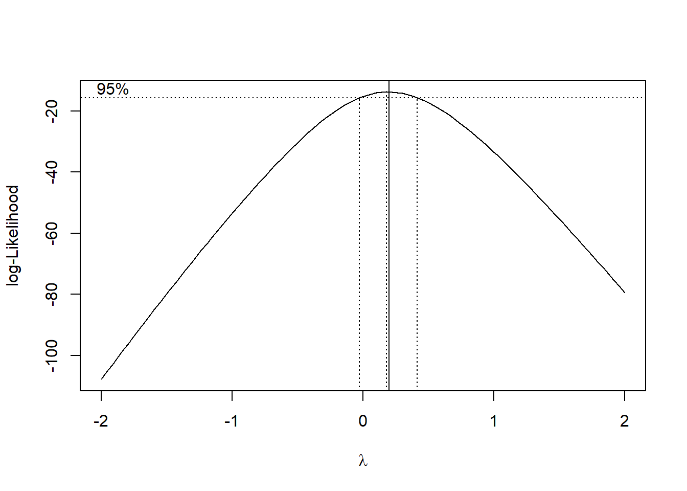
Os pressupostos foram atendindos
Teste de Shapiro-Wilk para Normalidade
##
## Shapiro-Wilk normality test
##
## data: m1$res
## W = 0.97288, p-value = 0.6207Teste de Bartllet para homocedasticidade
##
## Bartlett test of homogeneity of variances
##
## data: m1$res and dados$trat
## Bartlett's K-squared = 2.7641, df = 4, p-value = 0.598Resumo do modelo ajustado - Contraste
##
## Call:
## lm(formula = dados$pulgoes^0.2 ~ dados$trat, data = dados)
##
## Residuals:
## Min 1Q Median 3Q Max
## -0.33971 -0.10602 -0.02286 0.14069 0.44317
##
## Coefficients:
## Estimate Std. Error t value Pr(>|t|)
## (Intercept) 4.02268 0.08709 46.191 < 2e-16 ***
## dados$tratDiazinon 60CE -1.60093 0.12316 -12.999 1.27e-12 ***
## dados$tratSupracid 40CE dose 1 -0.55418 0.12316 -4.500 0.000136 ***
## dados$tratSupracid 40CE dose 2 -1.28606 0.12316 -10.442 1.33e-10 ***
## dados$tratTestemunha 0.73703 0.12316 5.984 3.00e-06 ***
## ---
## Signif. codes: 0 '***' 0.001 '**' 0.01 '*' 0.05 '.' 0.1 ' ' 1
##
## Residual standard error: 0.2133 on 25 degrees of freedom
## Multiple R-squared: 0.95, Adjusted R-squared: 0.942
## F-statistic: 118.8 on 4 and 25 DF, p-value: 6.978e-16Resumo do modelo ajustado - Contraste em relação a testemunha
##
## Call:
## lm(formula = dados$pulgoes^0.2 ~ dados$trat, data = dados)
##
## Residuals:
## Min 1Q Median 3Q Max
## -0.33971 -0.10602 -0.02286 0.14069 0.44317
##
## Coefficients:
## Estimate Std. Error t value Pr(>|t|)
## (Intercept) 4.75972 0.08709 54.654 < 2e-16 ***
## dados$tratAzinfos etilico -0.73703 0.12316 -5.984 3.00e-06 ***
## dados$tratDiazinon 60CE -2.33797 0.12316 -18.983 2.31e-16 ***
## dados$tratSupracid 40CE dose 1 -1.29122 0.12316 -10.484 1.23e-10 ***
## dados$tratSupracid 40CE dose 2 -2.02310 0.12316 -16.426 6.62e-15 ***
## ---
## Signif. codes: 0 '***' 0.001 '**' 0.01 '*' 0.05 '.' 0.1 ' ' 1
##
## Residual standard error: 0.2133 on 25 degrees of freedom
## Multiple R-squared: 0.95, Adjusted R-squared: 0.942
## F-statistic: 118.8 on 4 and 25 DF, p-value: 6.978e-168.1.4 Aplicando teste de Tukey para comparar médias
No R, o teste de Tukey é apresentado através de intervalos de confiança. A interpretação é: se o intervalo de confiança para a diferença entre duas médias não incluir o valor zero, significa que se rejeita a hipótese nula, caso contrário, não se rejeita. O resultado pode ser visto através de uma tabela e/ou graficamente:
## Tukey multiple comparisons of means
## 95% family-wise confidence level
##
## Fit: aov(formula = dados$pulgoes^0.2 ~ dados$trat, data = dados)
##
## $`dados$trat`
## diff lwr upr
## Azinfos etilico-Testemunha -0.7370340 -1.09874544 -0.3753225
## Diazinon 60CE-Testemunha -2.3379681 -2.69967961 -1.9762567
## Supracid 40CE dose 1-Testemunha -1.2912155 -1.65292701 -0.9295041
## Supracid 40CE dose 2-Testemunha -2.0230984 -2.38480982 -1.6613869
## Diazinon 60CE-Azinfos etilico -1.6009342 -1.96264562 -1.2392227
## Supracid 40CE dose 1-Azinfos etilico -0.5541816 -0.91589302 -0.1924701
## Supracid 40CE dose 2-Azinfos etilico -1.2860644 -1.64777584 -0.9243529
## Supracid 40CE dose 1-Diazinon 60CE 1.0467526 0.68504114 1.4084641
## Supracid 40CE dose 2-Diazinon 60CE 0.3148698 -0.04684168 0.6765812
## Supracid 40CE dose 2-Supracid 40CE dose 1 -0.7318828 -1.09359428 -0.3701714
## p adj
## Azinfos etilico-Testemunha 0.0000277
## Diazinon 60CE-Testemunha 0.0000000
## Supracid 40CE dose 1-Testemunha 0.0000000
## Supracid 40CE dose 2-Testemunha 0.0000000
## Diazinon 60CE-Azinfos etilico 0.0000000
## Supracid 40CE dose 1-Azinfos etilico 0.0011809
## Supracid 40CE dose 2-Azinfos etilico 0.0000000
## Supracid 40CE dose 1-Diazinon 60CE 0.0000001
## Supracid 40CE dose 2-Diazinon 60CE 0.1099096
## Supracid 40CE dose 2-Supracid 40CE dose 1 0.0000307
Teste Tukey com pacote Agricolae
## Df Sum Sq Mean Sq F value Pr(>F)
## dados$trat 4 21.629 5.407 118.8 6.98e-16 ***
## Residuals 25 1.138 0.046
## ---
## Signif. codes: 0 '***' 0.001 '**' 0.01 '*' 0.05 '.' 0.1 ' ' 1tu <- HSD.test(y = dados$pulgoes^0.2,
trt = dados$trat,
MSerror = deviance(m1)/df.residual(m1), #quadrado médio do residuo
DFerror = df.residual(m1),
console = T)##
## Study: dados$pulgoes^0.2 ~ dados$trat
##
## HSD Test for dados$pulgoes^0.2
##
## Mean Square Error: 0.04550677
##
## dados$trat, means
##
## dados.pulgoes.0.2 std r Min Max
## Azinfos etilico 4.022682 0.1967278 6 3.830812 4.332792
## Diazinon 60CE 2.421748 0.2492525 6 2.131526 2.864913
## Supracid 40CE dose 1 3.468500 0.2678917 6 3.163821 3.846471
## Supracid 40CE dose 2 2.736617 0.1264052 6 2.634879 2.959410
## Testemunha 4.759716 0.1973855 6 4.420008 4.965939
##
## Alpha: 0.05 ; DF Error: 25
## Critical Value of Studentized Range: 4.153363
##
## Minimun Significant Difference: 0.3617115
##
## Treatments with the same letter are not significantly different.
##
## dados$pulgoes^0.2 groups
## Testemunha 4.759716 a
## Azinfos etilico 4.022682 b
## Supracid 40CE dose 1 3.468500 c
## Supracid 40CE dose 2 2.736617 d
## Diazinon 60CE 2.421748 d## List of 5
## $ statistics:'data.frame': 1 obs. of 5 variables:
## ..$ MSerror: num 0.0455
## ..$ Df : int 25
## ..$ Mean : num 3.48
## ..$ CV : num 6.13
## ..$ MSD : num 0.362
## $ parameters:'data.frame': 1 obs. of 5 variables:
## ..$ test : Factor w/ 1 level "Tukey": 1
## ..$ name.t : Factor w/ 1 level "dados$trat": 1
## ..$ ntr : int 5
## ..$ StudentizedRange: num 4.15
## ..$ alpha : num 0.05
## $ means :'data.frame': 5 obs. of 8 variables:
## ..$ dados$pulgoes^0.2: num [1:5] 4.02 2.42 3.47 2.74 4.76
## ..$ std : num [1:5] 0.197 0.249 0.268 0.126 0.197
## ..$ r : int [1:5] 6 6 6 6 6
## ..$ Min : num [1:5] 3.83 2.13 3.16 2.63 4.42
## ..$ Max : num [1:5] 4.33 2.86 3.85 2.96 4.97
## ..$ Q25 : num [1:5] 3.88 2.3 3.24 2.65 4.7
## ..$ Q50 : num [1:5] 3.96 2.38 3.5 2.69 4.77
## ..$ Q75 : num [1:5] 4.14 2.47 3.61 2.78 4.9
## $ comparison: NULL
## $ groups :'data.frame': 5 obs. of 2 variables:
## ..$ dados$pulgoes^0.2: num [1:5] 4.76 4.02 3.47 2.74 2.42
## ..$ groups : Factor w/ 4 levels "a","b","c","d": 1 2 3 4 4
## - attr(*, "class")= chr "group"## dados$pulgoes^0.2 groups
## Testemunha 4.759716 a
## Azinfos etilico 4.022682 b
## Supracid 40CE dose 1 3.468500 c
## Supracid 40CE dose 2 2.736617 d
## Diazinon 60CE 2.421748 d8.1.5 Aplicando teste para agrupar médias
carregando a biblioteca necessária
## Loading required package: laercioTeste de Duncan
##
## DUNCAN TEST TO COMPARE MEANS
##
## Confidence Level: 0.95
## Dependent Variable: dados$pulgoes^0.2
## Variation Coefficient: 6.126714 %
##
##
## Independent Variable: dados$trat
## Factors Means
## Testemunha 4.75971565312899 a
## Azinfos etilico 4.02268167030532 b
## Supracid 40CE dose 1 3.46850010815533 c
## Supracid 40CE dose 2 2.73661729164913 d
## Diazinon 60CE 2.42174750727391 e##
## TUKEY TEST TO COMPARE MEANS
##
## Confidence level: 0.95
## Dependent variable: dados$pulgoes^0.2
## Variation Coefficient: 6.126714 %
##
## Independent variable: dados$trat
## Factors Means
## Testemunha 4.75971565312899 a
## Azinfos etilico 4.02268167030532 b
## Supracid 40CE dose 1 3.46850010815533 c
## Supracid 40CE dose 2 2.73661729164913 d
## Diazinon 60CE 2.42174750727391 d
##
## Pacote para analise de experimentos
##
## Attaching package: 'ExpDes.pt'## The following object is masked from 'package:MASS':
##
## ginv## The following objects are masked from 'package:agricolae':
##
## lastC, order.group, tapply.stat## The following object is masked from 'package:stats':
##
## ccfRecursos adicionais para comparações múltiplas
Outros procedimentos serão implementados em pacotes contribuídos do R. Entre estes encontra-se os pacotes multcomp e multcompView que implementam diversos outros procedimentos e gráficos para visualizações dos resultados. Vale notar que estes pacotes devem ser instalados com a opção dependencies=TRUE para garantir plena funcionalidade pois suas funções dependem de diversos outros pacotes.
## Loading required package: multcomp## Loading required package: mvtnorm## Loading required package: survival## Loading required package: TH.data##
## Attaching package: 'TH.data'## The following object is masked from 'package:MASS':
##
## geyser## Loading required package: multcompView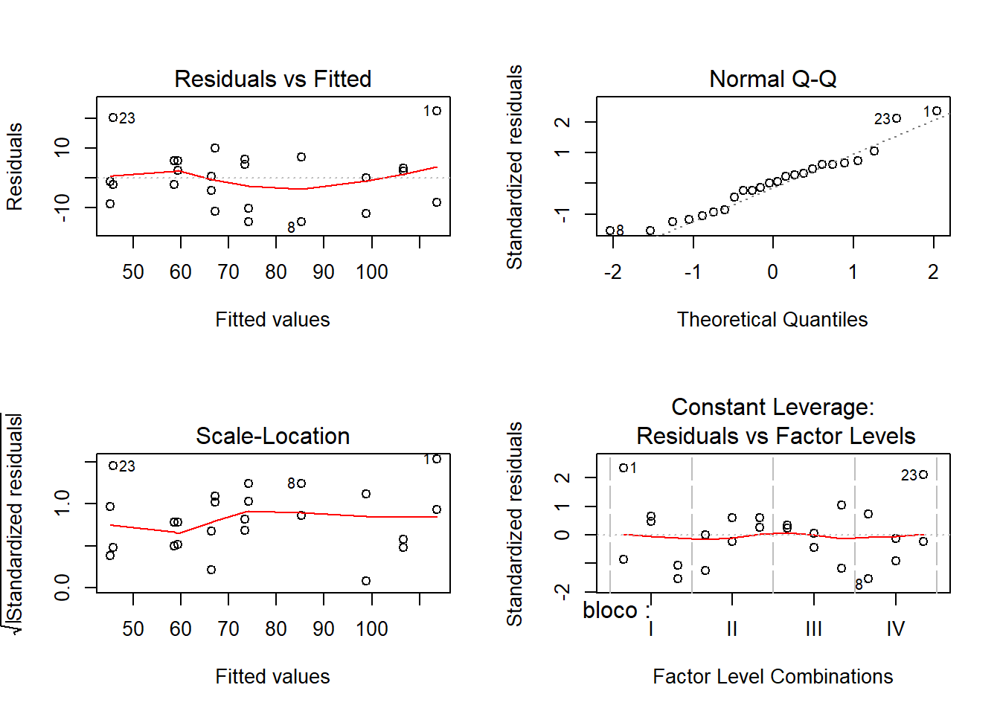
8.1.6 Referência
MELO, M. P.; PETERNELI, L. A. Conhecendo o R: Um visão mais que estatística. Viçosa, MG: UFV, 2013. 222p. Cap. 1.
BANZATTO, D. A; KRONKA, S. N. Experimentação agrícola. Jaboticabal, SP: FUNEP, 2006, 237p.
ZEVIANI, W. M. estatística Básica e Experimentação no R. 45p.
8.2 Delineamento em bloco casualizado
O delineamento em blocos casualizados (DBC) tem três princípios basicos de experimentação:
repetição
casualização
controle local
É o deliamento mais utilizado de todos delineamento. Ele é utilizado quando há heterogeneidade nas condições experimentais. Nesse caso divide-se o material experimental, ou amostra, em bloco homogêneos de forma a contemplar as diferenças entre grupos. A ANOVA associada a este modelo de experimento é também conhecida como Two Way ANOVA.
8.2.1 Análise de experimento DBC
Resultados de um experimento instalado na Fazenda Chapadão, no município de Angatuba - SP. O delineamento experimental foi o de blocos casualizados, sendo as parcelas constituídas de 4 plantas espa?adas de 6 x 7 metros, com 12 anos de idade na época da instalação do experimento.
Importando dados
conferir se temos fatores para fazer a análise de variância
## 'data.frame': 20 obs. of 3 variables:
## $ promalin: Factor w/ 5 levels "12.5","12.5+12.5",..: 1 3 4 2 5 1 3 4 2 5 ...
## $ bloco : Factor w/ 4 levels "I","II","III",..: 1 1 1 1 1 2 2 2 2 2 ...
## $ peso : num 142 140 141 151 154 ...Lembramos que o peso deve ter conteudo numerico e o promalin e bloco deve ser fator.
Verificação gráfica**
## Loading required package: lattice
O efeito do bloco é aditivo?
Ligar as observações com o mesmo bloco com a função type ="o"

Reordenar os tratamentos
## Loading required package: plyrGraficos reordenados da menor média a maior média por tratamento
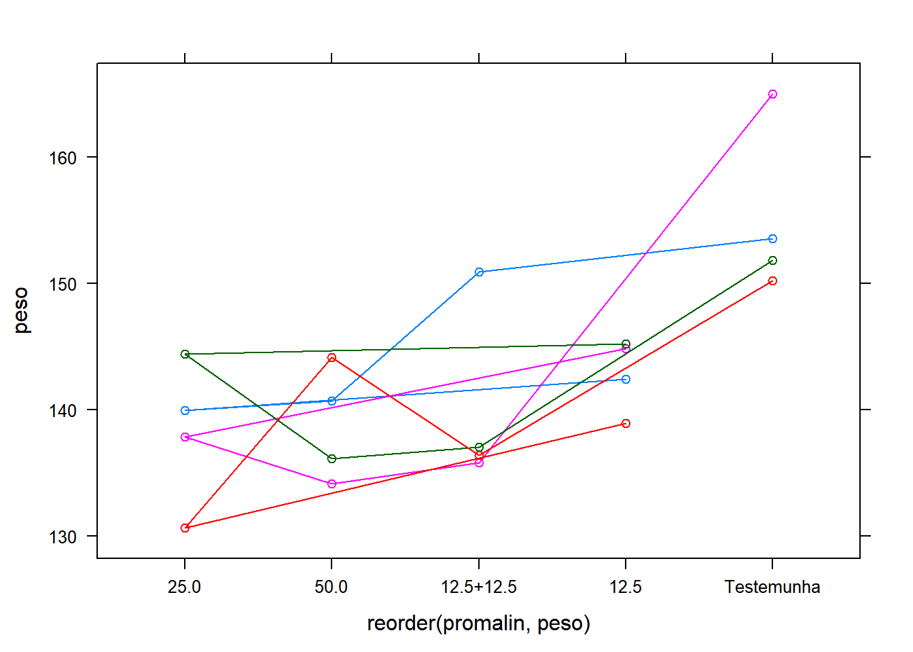
8.2.1.1 Análise de variância
Fazendo a análise de variância
## Analysis of Variance Table
##
## Response: dados$peso
## Df Sum Sq Mean Sq F value Pr(>F)
## dados$bloco 1 71.57 71.572 2.4574 0.139291
## dados$promalin 4 788.95 197.238 6.7721 0.002994 **
## Residuals 14 407.75 29.125
## ---
## Signif. codes: 0 '***' 0.001 '**' 0.01 '*' 0.05 '.' 0.1 ' ' 1Extraindo o coeficiente de variação
## [1] 3.774477Análise gráfica dos resíduos

Analisando a Figura acima sugere que o principal problema deste conjunto de dados pode ser a não normalidade.
8.2.1.1.1 Teste das pressuposições da análise de variância
8.2.1.1.1.0.1 Teste de Bartllet para homocedasticidade
##
## Bartlett test of homogeneity of variances
##
## data: m0$res and dados$promalin
## Bartlett's K-squared = 1.7485, df = 4, p-value = 0.7819Como observamos uma não significancia estatística neste resultado (p-value = 0.7819), devemos aceitar a hipótese nula de que as variâncias sejam as mesma em todos os níveis do fator.
8.2.1.1.1.0.2 Teste de Shapiro-Wilk para Normalidade
##
## Shapiro-Wilk normality test
##
## data: m0$res
## W = 0.855, p-value = 0.006472Como observamos uma significancia estatística neste resultado (p-value = 0.006472), devemos rejeitar a hipótese nula de que os residuoes tedem a distruibuição normal.
8.2.1.2 Transformação de dados
Tranformação de dados é uma das possíveis formas de contarnar o problema de dados que não obedecem os pressupostos da análise de variância. Vamos ver como isto poder ser feito com o programa R.
8.2.1.2.1 Transformação de dados com o BOX-COX
Para tentar contornar o problema vamos usar a transformação Box-Cox, que consiste em transformar os dados de acordo com uma expressão.
A função boxcox() do pacote MASS calcula a verossimilhança perfilhada do parâmetro lambda. Devemos escolher o valor que maximiza esta função. Nos comandos a seguir começamos carregando o pacote MASS e depois obtemos o gráfico da verossimilhança perfilhada. Como estamos interessados no máximo fazermos um novo gráfico com um zoom na região de interesse.


Localizando o ponto máximo.
8.2.1.2.2 Análise de variância - Ajuste com a variável transformada.
Anáise gráfica dos resíduos

Os pressupostos foram atendindos ?
Teste de Shapiro-Wilk para Normalidade
##
## Shapiro-Wilk normality test
##
## data: m1$res
## W = 0.93909, p-value = 0.2305Teste de Bartllet para homocedasticidade
##
## Bartlett test of homogeneity of variances
##
## data: m1$res and dados$promalin
## Bartlett's K-squared = 2.1761, df = 4, p-value = 0.7034## Analysis of Variance Table
##
## Response: log(dados$peso)
## Df Sum Sq Mean Sq F value Pr(>F)
## dados$promalin 4 0.036571 0.0091428 6.0129 0.004296 **
## Residuals 15 0.022808 0.0015205
## ---
## Signif. codes: 0 '***' 0.001 '**' 0.01 '*' 0.05 '.' 0.1 ' ' 18.2.2 Pacote para analise de experimentos
Conhecer o pacote ExpDes.pt
## [1] "anscombetukey" "bartlett" "ccboot" "ccf"
## [5] "dbc" "dic" "dql" "duncan"
## [9] "faixas" "fat2.ad.dbc" "fat2.ad.dic" "fat2.dbc"
## [13] "fat2.dic" "fat3.ad.dbc" "fat3.ad.dic" "fat3.dbc"
## [17] "fat3.dic" "ginv" "graficos" "han"
## [21] "lastC" "layard" "levene" "lsd"
## [25] "lsdb" "oneilldbc" "oneillmathews" "order.group"
## [29] "order.stat.SNK" "plotres" "psub2.dbc" "psub2.dic"
## [33] "reg.nl" "reg.poly" "samiuddin" "scottknott"
## [37] "snk" "tapply.stat" "tukey"Utilizando o exemplo anterior.
x <- dbc(trat = dados$promalin,
bloco = dados$bloco,
resp = log(dados$peso),
quali = T,
mcomp = "tukey")## ------------------------------------------------------------------------
## Quadro da analise de variancia
## ------------------------------------------------------------------------
## GL SQ QM Fc Pr>Fc
## Tratamento 4 0.036571 0.0091428 5.7552 0.00800
## Bloco 3 0.003745 0.0012483 0.7858 0.52459
## Residuo 12 0.019063 0.0015886
## Total 19 0.059379
## ------------------------------------------------------------------------
## CV = 0.8 %
##
## ------------------------------------------------------------------------
## Teste de normalidade dos residuos
## valor-p: 0.005994506
## ATENCAO: a 5% de significancia, os residuos nao podem ser considerados normais!
## ------------------------------------------------------------------------
##
## ------------------------------------------------------------------------
## Teste de homogeneidade de variancia
## valor-p: 0.8927087
## De acordo com o teste de oneillmathews a 5% de significancia, as variancias podem ser consideradas homogeneas.
## ------------------------------------------------------------------------
##
## Teste de Tukey
## ------------------------------------------------------------------------
## Grupos Tratamentos Medias
## a Testemunha 5.043544
## ab 12.5 4.961465
## b 12.5+12.5 4.940843
## b 50.0 4.932278
## b 25.0 4.927864
## ------------------------------------------------------------------------Carregar pacotes
##
## Attaching package: 'dplyr'## The following objects are masked from 'package:plyr':
##
## arrange, count, desc, failwith, id, mutate, rename, summarise,
## summarize## The following object is masked from 'package:MASS':
##
## select## The following objects are masked from 'package:stats':
##
## filter, lag## The following objects are masked from 'package:base':
##
## intersect, setdiff, setequal, unionCalculo do erro
Gerando gráfico
ggplot(erro, aes(promalin, avg, fill=promalin))+
geom_bar(stat="identity")+
geom_errorbar(aes(ymin=avg-sd, ymax =avg+sd), with=0.1, col="black") +
xlab("Tratamentos") +
ylab("Peso médio dos frutos (g)") +
theme_bw() +
theme(legend.position="top") +
annotate("text", label="ab", x=1, y=100, size = 5) +
annotate("text", label="b", x=2, y=100, size = 5) +
annotate("text", label="b", x=3, y=100, size = 5) +
annotate("text", label="b", x=4, y=100, size = 5) +
annotate("text", label="a", x=5, y=100, size = 5) +
theme(legend.position="none") +
labs(caption = "Médias seguidas de mesma letra indicam diferença nula à 5%")## Warning: Ignoring unknown parameters: with
8.2.3 Teste não parametrico
As funções para comparações multiplas não-paramétricas incluídas no pacote agricolae são: kruskal, waerden.test, friedman, durbin.test e Conover (1999). Os testes não-paramétricos post hoc (kruskal, friedman, durbin e waerden) estão usando o critério a diferença menos significativa de Fisher (LSD).
Carregar pacote
A função kruskal é usada para N amostras (N> 2), populações ou dados provenientes de um experimento aleatório (populações = tratamentos).
##
## Study: peso ~ promalin
## Kruskal-Wallis test's
## Ties or no Ties
##
## Critical Value: 10.41429
## Degrees of freedom: 4
## Pvalue Chisq : 0.03399839
##
## promalin, means of the ranks
##
## peso r
## 12.5 12.00 4
## 12.5+12.5 7.75 4
## 25.0 7.50 4
## 50.0 7.00 4
## Testemunha 18.25 4
##
## Post Hoc Analysis
##
## P value adjustment method: bonferroni
## t-Student: 3.286039
## Alpha : 0.05
## Minimum Significant Difference: 10.40002
##
## Treatments with the same letter are not significantly different.
##
## peso groups
## Testemunha 18.25 a
## 12.5 12.00 ab
## 12.5+12.5 7.75 b
## 25.0 7.50 b
## 50.0 7.00 b## peso groups
## Testemunha 18.25 a
## 12.5 12.00 ab
## 12.5+12.5 7.75 b
## 25.0 7.50 b
## 50.0 7.00 bGráficos
par(mfrow=c(2,2),mar=c(3,3,1,1),cex=0.8)
bar.group(woutKruskal$group,ylim=c(0,100), xlab ="promalin")
bar.group(woutKruskal$group,xlim=c(0,100),horiz = TRUE)
plot(woutKruskal)
plot(woutKruskal,variation="IQR",horiz = TRUE)
A função friedman é usada para análise de tratamentos do estudo randomizado
de bloco completo, onde a resposta não pode ser tratada através da análise de variância.
##
## Study: peso ~ bloco + promalin
##
## promalin, Sum of the ranks
##
## peso r
## 12.5 8 4
## 12.5+12.5 8 4
## 25.0 10 4
## 50.0 14 4
## Testemunha 20 4
##
## Friedman's Test
## ===============
## Adjusted for ties
## Critical Value: 10.4
## P.Value Chisq: 0.0342027
## F Value: 5.571429
## P.Value F: 0.009007502
##
## Post Hoc Analysis
##
## Alpha: 0.05 ; DF Error: 12
## t-Student: 2.178813
## LSD: 6.656383
##
## Treatments with the same letter are not significantly different.
##
## Sum of ranks groups
## Testemunha 20 a
## 50.0 14 ab
## 25.0 10 b
## 12.5 8 b
## 12.5+12.5 8 bGrafico
par(mfrow=c(2,2),mar=c(3,3,1,1),cex=0.8)
bar.group(woutfriedman$group,ylim=c(0,100), xlab ="promalin")
bar.group(woutfriedman$group,xlim=c(0,100),horiz = TRUE)
plot(woutfriedman)
plot(woutfriedman,variation="IQR",horiz = TRUE)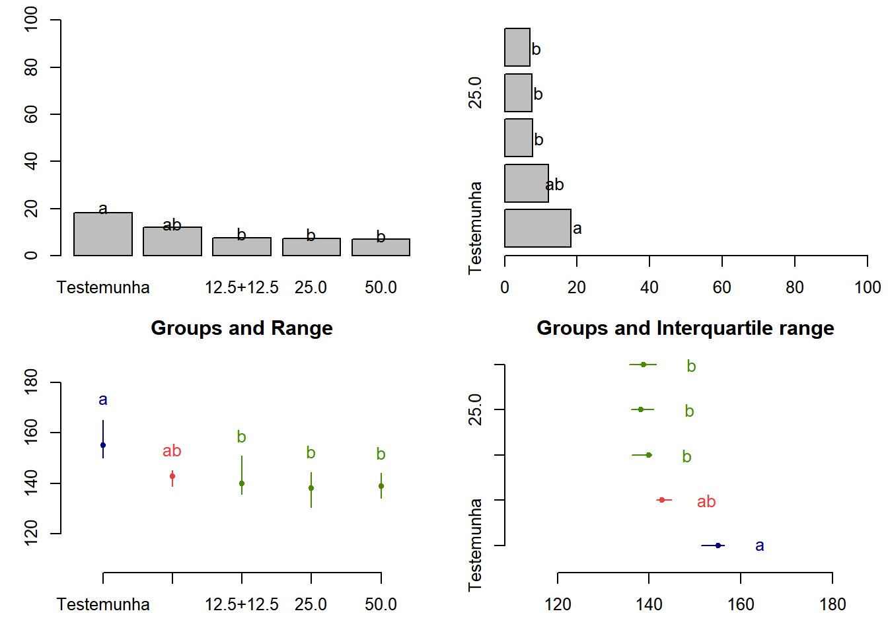
8.2.4 Exercicio 1
Obtenha: Analise exploratoria, Analise de variancia, teste de comparação multipla, e recomendações.
Comparação de métodos de Semeadura do Mamoeiro
Estudo realizado em Jaboticabal - SP por Ruiz (1977) que comparou métodos de semeadura no mamoeiro. O experimento foi instalado em delineamento de blocos casualizados, com 4 repetições, avaliando 3 métodos de semeadura. Foram avaliadas duas unidades experimentais por método em cada bloco.
Importando dados
Conferir se temos fatores para fazer a análise de variância
## 'data.frame': 24 obs. of 3 variables:
## $ bloco : Factor w/ 4 levels "I","II","III",..: 1 1 2 2 3 3 4 4 1 1 ...
## $ semead: Factor w/ 3 levels "Direta no campo",..: 1 1 1 1 1 1 1 1 2 2 ...
## $ altura: num 136.1 105.3 98.8 86.8 108.8 ...Gráficos
## I II III IV Sum
## Direta no campo 241.4 185.6 218.5 162.9 808.4
## Recip. ao sol 157.7 120.7 129.0 80.1 487.5
## Recip. ripado 123.5 127.1 132.9 109.8 493.3
## Sum 522.6 433.4 480.4 352.8 1789.2xyplot(altura ~ semead, data = dados,
groups = bloco, type = c("p", "a"),
xlab = "Método de semeadura de mamoeiro",
ylab = "Altura média de planta de mamoeiro aos 147 DAS (cm)",
auto.key = list(title = "Bloco", cex.title = 1, columns = 2))Análise de Variância
## [1] "aov" "lm"## Analysis of Variance Table
##
## Response: altura
## Df Sum Sq Mean Sq F value Pr(>F)
## bloco 3 2648.2 882.7 7.2162 0.002219 **
## semead 2 8429.1 4214.6 34.4535 7.014e-07 ***
## Residuals 18 2201.9 122.3
## ---
## Signif. codes: 0 '***' 0.001 '**' 0.01 '*' 0.05 '.' 0.1 ' ' 1## Df Sum Sq Mean Sq F value Pr(>F)
## bloco 3 2648 883 7.216 0.00222 **
## semead 2 8429 4215 34.453 7.01e-07 ***
## Residuals 18 2202 122
## ---
## Signif. codes: 0 '***' 0.001 '**' 0.01 '*' 0.05 '.' 0.1 ' ' 1Checagem gráfica
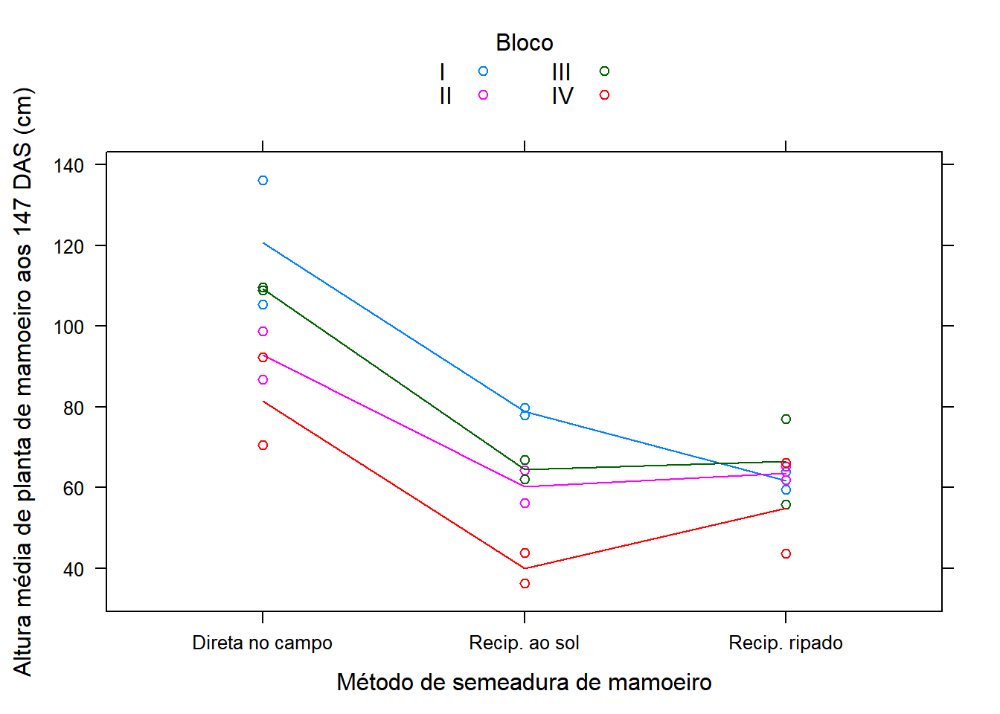
Teste das pressuposições de normalidade de homocedasticidade
##
## Shapiro-Wilk normality test
##
## data: residuals(m0)
## W = 0.95197, p-value = 0.2988##
## Bartlett test of homogeneity of variances
##
## data: residuals(m0) by dados$semead
## Bartlett's K-squared = 4.5219, df = 2, p-value = 0.1043Teste de médias
Teste de Tukey
tu <- with(dados, HSD.test(altura, semead,
DFerror=df.residual(m0),
MSerror=deviance(m0)/df.residual(m0)))## $statistics
## MSerror Df Mean CV MSD
## 122.3258 18 74.55 14.83581 14.11359
##
## $parameters
## test name.t ntr StudentizedRange alpha
## Tukey semead 3 3.609304 0.05
##
## $means
## altura std r Min Max Q25 Q50 Q75
## Direta no campo 101.0500 19.263956 8 70.5 136.1 91.000 102.05 109.025
## Recip. ao sol 60.9375 15.187489 8 36.3 79.8 53.175 63.25 69.650
## Recip. ripado 61.6625 9.544922 8 43.7 77.1 58.575 62.95 65.425
##
## $comparison
## NULL
##
## $groups
## altura groups
## Direta no campo 101.0500 a
## Recip. ripado 61.6625 b
## Recip. ao sol 60.9375 b
##
## attr(,"class")
## [1] "group"require(dplyr)
require(ggplot2)
erro = summarise(group_by(dados, semead),
avg = mean(altura), sd = sd(altura))
ggplot(erro, aes(semead, avg, fill=semead))+
geom_bar(stat="identity")+
geom_errorbar(aes(ymin=avg-sd, ymax =avg+sd), with=0.1, col="black") +
xlab("Tratamentos") +
ylab("Altura média de planta de mamoeiro aos 147 DAS (cm)") +
theme_bw() +
theme(legend.position="top") +
annotate("text", label=tu$groups$groups[1], x=1, y=20, size = 5) +
annotate("text", label=tu$groups$groups[2], x=2, y=20, size = 5) +
annotate("text", label=tu$groups$groups[3], x=3, y=20, size = 5) +
theme(legend.position="none") +
labs(caption = "Médias seguidas de mesma letra indicam diferença nula à 5%")## Warning: Ignoring unknown parameters: with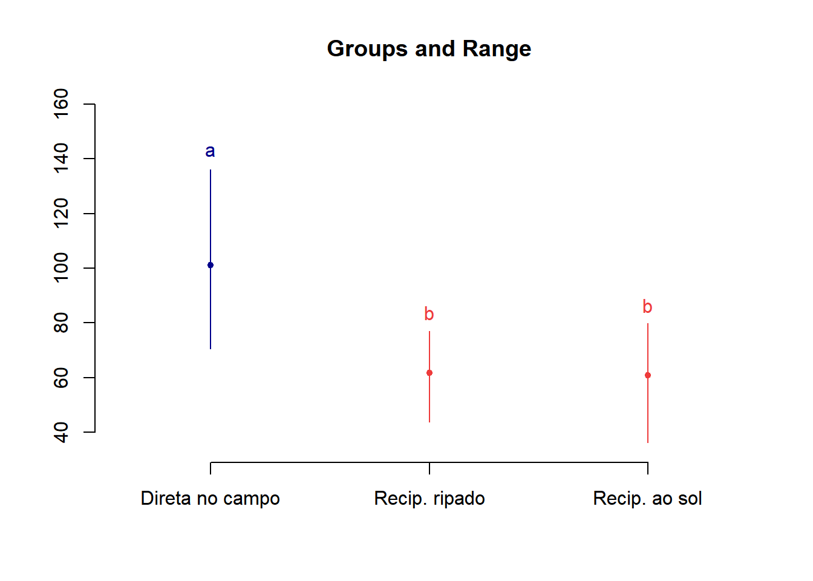
Teste de Scott-Knott
library(ScottKnott)
sk <- SK(x=dados, y=dados$altura, model="altura~bloco+semead", which="semead")
summary(sk)## Levels Means SK(5%)
## Direta no campo 101.0500 a
## Recip. ripado 61.6625 b
## Recip. ao sol 60.9375 b## $av
## Call:
## aov(formula = altura ~ bloco + semead, data = dat)
##
## Terms:
## bloco semead Residuals
## Sum of Squares 2648.193 8429.103 2201.864
## Deg. of Freedom 3 2 18
##
## Residual standard error: 11.0601
## Estimated effects may be unbalanced
##
## $groups
## [1] 1 2 2
##
## $nms
## [1] "Direta no campo" "Recip. ao sol" "Recip. ripado"
##
## $ord
## [1] 1 3 2
##
## $m.inf
## mean min max
## Direta no campo 101.0500 70.5 136.1
## Recip. ripado 61.6625 43.7 77.1
## Recip. ao sol 60.9375 36.3 79.8
##
## $sig.level
## [1] 0.05
##
## attr(,"class")
## [1] "SK" "list"8.2.5 Referência
MELO, M. P.; PETERNELI, L. A. Conhecendo o R: Um visão mais que estatística. Viçosa, MG: UFV, 2013. 222p. Cap. 1.
BANZATTO, D. A; KRONKA, S. N. Experimentação agrícola. Jaboticabal, SP: FUNEP, 2006, 237p.
ZEVIANI, W. M. Estatística Básica e Experimentação no R. 45p.
8.3 Quadrado Latino
Essa material foi baseado nas aulas do Prof. Walmes Zeviani.
8.3.1 Banco de dados
Iremos instalar o pacote com banco de dados.
O labestData é um pacote para o software R de computação estatística que possui centenas de conjuntos de dados para o ensino e aprendizado de Estatística. O pacote é desenvolvido pelo PET Estatística UFPR e conta com a participação de professores e colaboradores. O nome labest vem de LABoratório de ESTatística, que é o ambiente onde acontecem as aulas práticas do Curso de Estatística na UFPR.
## Loading required package: usethisInstalação
Do repositório de desenvolvimento no GitLab.
install_git(url = "https://gitlab.c3sl.ufpr.br/pet-estatistica/labestData.git",
branch = "master", build_vignettes = TRUE)Do repositório de divulgação no GitHub.
install_github(repo = "labestData",
username = "pet-estatistica",
ref = "master", build_vignettes = TRUE)Instalação por Arquivos Compactados
Lendo arquivos de dados
Escolhendo os dados
###Escolher o banco de dados
## linha coluna varied prod
## 1 1 1 D 432
## 2 2 1 C 724
## 3 3 1 E 489
## 4 4 1 B 494
## 5 5 1 A 515
## 6 1 2 A 518
## 7 2 2 E 478
## 8 3 2 B 384
## 9 4 2 D 500
## 10 5 2 C 660
## 11 1 3 B 458
## 12 2 3 A 524
## 13 3 3 C 556
## 14 4 3 E 313
## 15 5 3 D 438
## 16 1 4 C 583
## 17 2 4 B 550
## 18 3 4 D 297
## 19 4 4 A 486
## 20 5 4 E 394
## 21 1 5 E 331
## 22 2 5 D 400
## 23 3 5 A 420
## 24 4 5 C 501
## 25 5 5 B 318Experimento de competição de variedades de cana-de-açúcar no qual foram usadas cinco variedades dispostas em um delineamento quadrado latino 5 times 5. Converte para nome de objeto mais simples.
## No documentation for 'pim' in specified packages and libraries:
## you could try '??pim'Verificar estrutura dos dados
## 'data.frame': 25 obs. of 4 variables:
## $ linha : Factor w/ 5 levels "1","2","3","4",..: 1 2 3 4 5 1 2 3 4 5 ...
## $ coluna: Factor w/ 5 levels "1","2","3","4",..: 1 1 1 1 1 2 2 2 2 2 ...
## $ varied: Factor w/ 5 levels "A","B","C","D",..: 4 3 5 2 1 1 5 2 4 3 ...
## $ prod : int 432 724 489 494 515 518 478 384 500 660 ...Vendo o quadrado no plano.
## Loading required package: reshape##
## Attaching package: 'reshape'## The following object is masked from 'package:dplyr':
##
## rename## The following objects are masked from 'package:plyr':
##
## rename, round_anyPacote gráfico
## Loading required package: latticeExtra##
## Attaching package: 'latticeExtra'## The following object is masked from 'package:ggplot2':
##
## layerGerar gráfico
levelplot(prod~linha+coluna, data=pim, aspect="iso") +
layer(with(pim, panel.text(x=linha, y=coluna, label=paste(varied, prod))))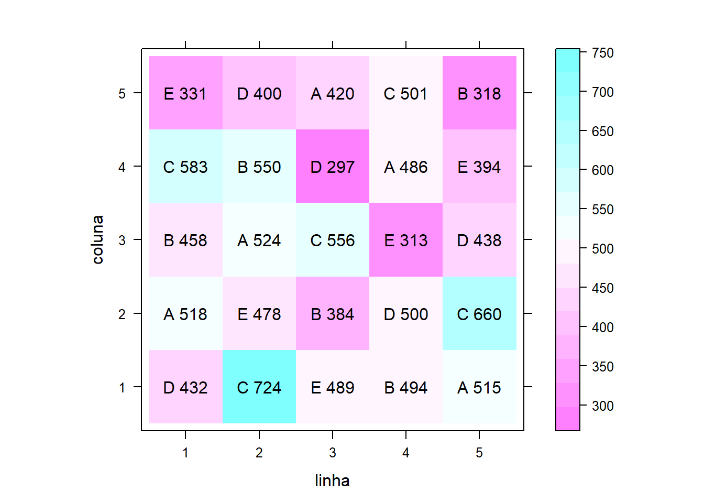
ANOVA
pressuposto seja atendidos?
Teste de Bartllet para homocedasticidade
##
## Bartlett test of homogeneity of variances
##
## data: m0$residuals by pim$varied
## Bartlett's K-squared = 5.6629, df = 4, p-value = 0.2258Teste de Shapiro-Wilk para Normalidade
##
## Shapiro-Wilk normality test
##
## data: m0$res
## W = 0.97701, p-value = 0.8202Quadro de análise de variância.
## Analysis of Variance Table
##
## Response: prod
## Df Sum Sq Mean Sq F value Pr(>F)
## linha 4 30481 7620 2.6804 0.0831343 .
## coluna 4 55641 13910 4.8930 0.0142293 *
## varied 4 137488 34372 12.0905 0.0003585 ***
## Residuals 12 34115 2843
## ---
## Signif. codes: 0 '***' 0.001 '**' 0.01 '*' 0.05 '.' 0.1 ' ' 1##
## Call:
## lm(formula = prod ~ linha + coluna + varied, data = pim)
##
## Residuals:
## Min 1Q Median 3Q Max
## -66.56 -25.16 -1.56 23.24 69.04
##
## Coefficients:
## Estimate Std. Error t value Pr(>|t|)
## (Intercept) 546.76 38.45 14.220 7.14e-09 ***
## linha2 70.80 33.72 2.100 0.05759 .
## linha3 -35.20 33.72 -1.044 0.31713
## linha4 -5.60 33.72 -0.166 0.87087
## linha5 0.60 33.72 0.018 0.98610
## coluna2 -22.80 33.72 -0.676 0.51178
## coluna3 -73.00 33.72 -2.165 0.05127 .
## coluna4 -68.80 33.72 -2.040 0.06397 .
## coluna5 -136.80 33.72 -4.057 0.00159 **
## variedB -51.80 33.72 -1.536 0.15045
## variedC 112.20 33.72 3.327 0.00603 **
## variedD -79.20 33.72 -2.349 0.03680 *
## variedE -91.60 33.72 -2.716 0.01873 *
## ---
## Signif. codes: 0 '***' 0.001 '**' 0.01 '*' 0.05 '.' 0.1 ' ' 1
##
## Residual standard error: 53.32 on 12 degrees of freedom
## Multiple R-squared: 0.8676, Adjusted R-squared: 0.7353
## F-statistic: 6.555 on 12 and 12 DF, p-value: 0.001366Teste de média de comparações múltiplas
library(doBy) # obter as médias ajustadas
library(multcomp)
p0 = LSmeans(m0, effect = "varied", level = 0.95)Verificar estrutura
## List of 3
## $ coef:'data.frame': 5 obs. of 5 variables:
## ..$ estimate : num [1:5] 493 441 605 413 401
## ..$ std.error: num [1:5] 23.8 23.8 23.8 23.8 23.8
## ..$ statistic: num [1:5] 20.7 18.5 25.4 17.3 16.8
## ..$ df : num [1:5] 12 12 12 12 12
## ..$ p.value : num [1:5] 9.55e-11 3.49e-10 8.57e-12 7.34e-10 1.04e-09
## $ grid:'data.frame': 5 obs. of 1 variable:
## ..$ varied: chr [1:5] "A" "B" "C" "D" ...
## $ L : 'linest_matrix_class' num [1:5, 1:13] 1 1 1 1 1 0.2 0.2 0.2 0.2 0.2 ...
## ..- attr(*, "dimnames")=List of 2
## .. ..$ : NULL
## .. ..$ : chr [1:13] "(Intercept)" "linha2" "linha3" "linha4" ...
## ..- attr(*, "grid")='data.frame': 5 obs. of 1 variable:
## .. ..$ varied: chr [1:5] "A" "B" "C" "D" ...
## - attr(*, "class")= chr "linest_class"## Coefficients:
## estimate std.error statistic df p.value
## [1,] 492.600 23.845 20.659 12.000 0
## [2,] 440.800 23.845 18.486 12.000 0
## [3,] 604.800 23.845 25.364 12.000 0
## [4,] 413.400 23.845 17.337 12.000 0
## [5,] 401.000 23.845 16.817 12.000 0## Using github PAT from envvar GITHUB_PAT## Skipping install of 'wzRfun' from a github remote, the SHA1 (a90b379a) has not changed since last install.
## Use `force = TRUE` to force installation## Loading required package: wzRfun## ----------------------------------------------------------------------
## wzRfun: Walmes Zeviani's collection of functions
##
## wzRfun (0.91, built on 2019-07-11) was loaded.
## Consult online documentation at:
## http://leg.ufpr.br/~walmes/pacotes/wzRfun
## For collaboration, support or bug report, visit:
## https://github.com/walmes/wzRfun/issues
## For general information: packageDescription("wzRfun")
## To access the package documentation: help(package = "wzRfun")
## ----------------------------------------------------------------------Comparações múltiplas, contrastes de Tukey. Método de correção de p-valor: single-step.
##
## Simultaneous Tests for General Linear Hypotheses
##
## Multiple Comparisons of Means: Tukey Contrasts
##
##
## Fit: lm(formula = prod ~ linha + coluna + varied, data = pim)
##
## Linear Hypotheses:
## Estimate Std. Error t value Pr(>|t|)
## B - A == 0 -51.80 33.72 -1.536 0.56052
## C - A == 0 112.20 33.72 3.327 0.03934 *
## D - A == 0 -79.20 33.72 -2.349 0.19543
## E - A == 0 -91.60 33.72 -2.716 0.10971
## C - B == 0 164.00 33.72 4.863 0.00292 **
## D - B == 0 -27.40 33.72 -0.813 0.92177
## E - B == 0 -39.80 33.72 -1.180 0.76212
## D - C == 0 -191.40 33.72 -5.676 < 0.001 ***
## E - C == 0 -203.80 33.72 -6.044 < 0.001 ***
## E - D == 0 -12.40 33.72 -0.368 0.99555
## ---
## Signif. codes: 0 '***' 0.001 '**' 0.01 '*' 0.05 '.' 0.1 ' ' 1
## (Adjusted p values reported -- single-step method)Resumo compacto com letras.
## A B C D E
## "a" "a" "b" "a" "a"Medias com intervalo de confiança
## List of 9
## $ model :List of 13
## ..$ coefficients : Named num [1:13] 546.8 70.8 -35.2 -5.6 0.6 ...
## .. ..- attr(*, "names")= chr [1:13] "(Intercept)" "linha2" "linha3" "linha4" ...
## ..$ residuals : Named num [1:25] -35.56 -5.76 69.04 4.64 -32.36 ...
## .. ..- attr(*, "names")= chr [1:25] "1" "2" "3" "4" ...
## ..$ effects : Named num [1:25] -2352.6 -161.7 64.937 10.772 -0.949 ...
## .. ..- attr(*, "names")= chr [1:25] "(Intercept)" "linha2" "linha3" "linha4" ...
## ..$ rank : int 13
## ..$ fitted.values: Named num [1:25] 468 730 420 489 547 ...
## .. ..- attr(*, "names")= chr [1:25] "1" "2" "3" "4" ...
## ..$ assign : int [1:13] 0 1 1 1 1 2 2 2 2 3 ...
## ..$ qr :List of 5
## .. ..$ qr : num [1:25, 1:13] -5 0.2 0.2 0.2 0.2 0.2 0.2 0.2 0.2 0.2 ...
## .. .. ..- attr(*, "dimnames")=List of 2
## .. .. .. ..$ : chr [1:25] "1" "2" "3" "4" ...
## .. .. .. ..$ : chr [1:13] "(Intercept)" "linha2" "linha3" "linha4" ...
## .. .. ..- attr(*, "assign")= int [1:13] 0 1 1 1 1 2 2 2 2 3 ...
## .. .. ..- attr(*, "contrasts")=List of 3
## .. .. .. ..$ linha : chr "contr.treatment"
## .. .. .. ..$ coluna: chr "contr.treatment"
## .. .. .. ..$ varied: chr "contr.treatment"
## .. ..$ qraux: num [1:13] 1.2 1.42 1.41 1.4 1.38 ...
## .. ..$ pivot: int [1:13] 1 2 3 4 5 6 7 8 9 10 ...
## .. ..$ tol : num 1e-07
## .. ..$ rank : int 13
## .. ..- attr(*, "class")= chr "qr"
## ..$ df.residual : int 12
## ..$ contrasts :List of 3
## .. ..$ linha : chr "contr.treatment"
## .. ..$ coluna: chr "contr.treatment"
## .. ..$ varied: chr "contr.treatment"
## ..$ xlevels :List of 3
## .. ..$ linha : chr [1:5] "1" "2" "3" "4" ...
## .. ..$ coluna: chr [1:5] "1" "2" "3" "4" ...
## .. ..$ varied: chr [1:5] "A" "B" "C" "D" ...
## ..$ call : language lm(formula = prod ~ linha + coluna + varied, data = pim)
## ..$ terms :Classes 'terms', 'formula' language prod ~ linha + coluna + varied
## .. .. ..- attr(*, "variables")= language list(prod, linha, coluna, varied)
## .. .. ..- attr(*, "factors")= int [1:4, 1:3] 0 1 0 0 0 0 1 0 0 0 ...
## .. .. .. ..- attr(*, "dimnames")=List of 2
## .. .. .. .. ..$ : chr [1:4] "prod" "linha" "coluna" "varied"
## .. .. .. .. ..$ : chr [1:3] "linha" "coluna" "varied"
## .. .. ..- attr(*, "term.labels")= chr [1:3] "linha" "coluna" "varied"
## .. .. ..- attr(*, "order")= int [1:3] 1 1 1
## .. .. ..- attr(*, "intercept")= int 1
## .. .. ..- attr(*, "response")= int 1
## .. .. ..- attr(*, ".Environment")=<environment: R_GlobalEnv>
## .. .. ..- attr(*, "predvars")= language list(prod, linha, coluna, varied)
## .. .. ..- attr(*, "dataClasses")= Named chr [1:4] "numeric" "factor" "factor" "factor"
## .. .. .. ..- attr(*, "names")= chr [1:4] "prod" "linha" "coluna" "varied"
## ..$ model :'data.frame': 25 obs. of 4 variables:
## .. ..$ prod : int [1:25] 432 724 489 494 515 518 478 384 500 660 ...
## .. ..$ linha : Factor w/ 5 levels "1","2","3","4",..: 1 2 3 4 5 1 2 3 4 5 ...
## .. ..$ coluna: Factor w/ 5 levels "1","2","3","4",..: 1 1 1 1 1 2 2 2 2 2 ...
## .. ..$ varied: Factor w/ 5 levels "A","B","C","D",..: 4 3 5 2 1 1 5 2 4 3 ...
## .. ..- attr(*, "terms")=Classes 'terms', 'formula' language prod ~ linha + coluna + varied
## .. .. .. ..- attr(*, "variables")= language list(prod, linha, coluna, varied)
## .. .. .. ..- attr(*, "factors")= int [1:4, 1:3] 0 1 0 0 0 0 1 0 0 0 ...
## .. .. .. .. ..- attr(*, "dimnames")=List of 2
## .. .. .. .. .. ..$ : chr [1:4] "prod" "linha" "coluna" "varied"
## .. .. .. .. .. ..$ : chr [1:3] "linha" "coluna" "varied"
## .. .. .. ..- attr(*, "term.labels")= chr [1:3] "linha" "coluna" "varied"
## .. .. .. ..- attr(*, "order")= int [1:3] 1 1 1
## .. .. .. ..- attr(*, "intercept")= int 1
## .. .. .. ..- attr(*, "response")= int 1
## .. .. .. ..- attr(*, ".Environment")=<environment: R_GlobalEnv>
## .. .. .. ..- attr(*, "predvars")= language list(prod, linha, coluna, varied)
## .. .. .. ..- attr(*, "dataClasses")= Named chr [1:4] "numeric" "factor" "factor" "factor"
## .. .. .. .. ..- attr(*, "names")= chr [1:4] "prod" "linha" "coluna" "varied"
## ..- attr(*, "class")= chr "lm"
## $ linfct : 'linest_matrix_class' num [1:5, 1:13] 1 1 1 1 1 0.2 0.2 0.2 0.2 0.2 ...
## ..- attr(*, "dimnames")=List of 2
## .. ..$ : chr [1:5] "1" "2" "3" "4" ...
## .. ..$ : chr [1:13] "(Intercept)" "linha2" "linha3" "linha4" ...
## ..- attr(*, "grid")='data.frame': 5 obs. of 1 variable:
## .. ..$ varied: chr [1:5] "A" "B" "C" "D" ...
## $ rhs : num [1:5] 0 0 0 0 0
## $ coef : Named num [1:13] 546.8 70.8 -35.2 -5.6 0.6 ...
## ..- attr(*, "names")= chr [1:13] "(Intercept)" "linha2" "linha3" "linha4" ...
## $ vcov : num [1:13, 1:13] 1478 -569 -569 -569 -569 ...
## ..- attr(*, "dimnames")=List of 2
## .. ..$ : chr [1:13] "(Intercept)" "linha2" "linha3" "linha4" ...
## .. ..$ : chr [1:13] "(Intercept)" "linha2" "linha3" "linha4" ...
## $ df : int 12
## $ alternative: chr "two.sided"
## $ type : NULL
## $ confint : num [1:5, 1:3] 493 441 605 413 401 ...
## ..- attr(*, "dimnames")=List of 2
## .. ..$ : chr [1:5] "1" "2" "3" "4" ...
## .. ..$ : chr [1:3] "Estimate" "lwr" "upr"
## ..- attr(*, "conf.level")= num 0.95
## ..- attr(*, "calpha")= num 3
## - attr(*, "class")= chr [1:2] "confint.glht" "glht"
## - attr(*, "type")= chr "adjusted"Juntar com os nomes dos tratramentos com os intervalos
Colocar as letras. onde estão as letras?
## List of 10
## $ y : int [1:25] 432 724 489 494 515 518 478 384 500 660 ...
## $ yname : chr "prod"
## $ x : Factor w/ 5 levels "A","B","C","D",..: 4 3 5 2 1 1 5 2 4 3 ...
## $ xname : chr "varied"
## $ weights : NULL
## $ lp : Named num [1:25] 468 730 420 489 547 ...
## ..- attr(*, "names")= chr [1:25] "1" "2" "3" "4" ...
## $ covar : logi TRUE
## $ comps : chr [1:10, 1:2] "B" "C" "D" "E" ...
## ..- attr(*, "dimnames")=List of 2
## .. ..$ : chr [1:10] "B - A" "C - A" "D - A" "E - A" ...
## .. ..$ : NULL
## $ signif : logi [1:10] FALSE TRUE FALSE FALSE TRUE FALSE ...
## $ mcletters:List of 5
## ..$ Letters : Named chr [1:5] "a" "a" "b" "a" ...
## .. ..- attr(*, "names")= chr [1:5] "A" "B" "C" "D" ...
## ..$ monospacedLetters: Named chr [1:5] "a " "a " " b" "a " ...
## .. ..- attr(*, "names")= chr [1:5] "A" "B" "C" "D" ...
## ..$ LetterMatrix : logi [1:5, 1:2] TRUE TRUE FALSE TRUE TRUE FALSE ...
## .. ..- attr(*, "dimnames")=List of 2
## .. .. ..$ : chr [1:5] "A" "B" "C" "D" ...
## .. .. ..$ : chr [1:2] "a" "b"
## ..$ aLetters : chr [1:52] "a" "b" "c" "d" ...
## ..$ aseparator : chr "."
## ..- attr(*, "class")= chr "multcompLetters"
## - attr(*, "class")= chr "cld"## [1] "a" "a" "b" "a" "a"## 'data.frame': 5 obs. of 5 variables:
## $ varied : chr "A" "B" "C" "D" ...
## $ Estimate: num 493 441 605 413 401
## $ lwr : num 421 369 533 342 329
## $ upr : num 564 512 676 485 473
## $ cld : chr "a" "a" "b" "a" ...Representação gráfica dos resultados
require(latticeExtra)
segplot(varied~lwr+upr,
centers=Estimate,
data=ci,
draw=F, #desenhar segmentos
xlab = expression("Tratamento"),
ylab = "Número de perfilhos",
sub = list("Médias seguidas de mesma letra indicam diferença nula à 5%.",
font=1, cex=0.8)) +
layer(panel.text( x = centers,
y = z,
labels = sprintf("%0.2f %s", centers, ci$cld),
pos = 3))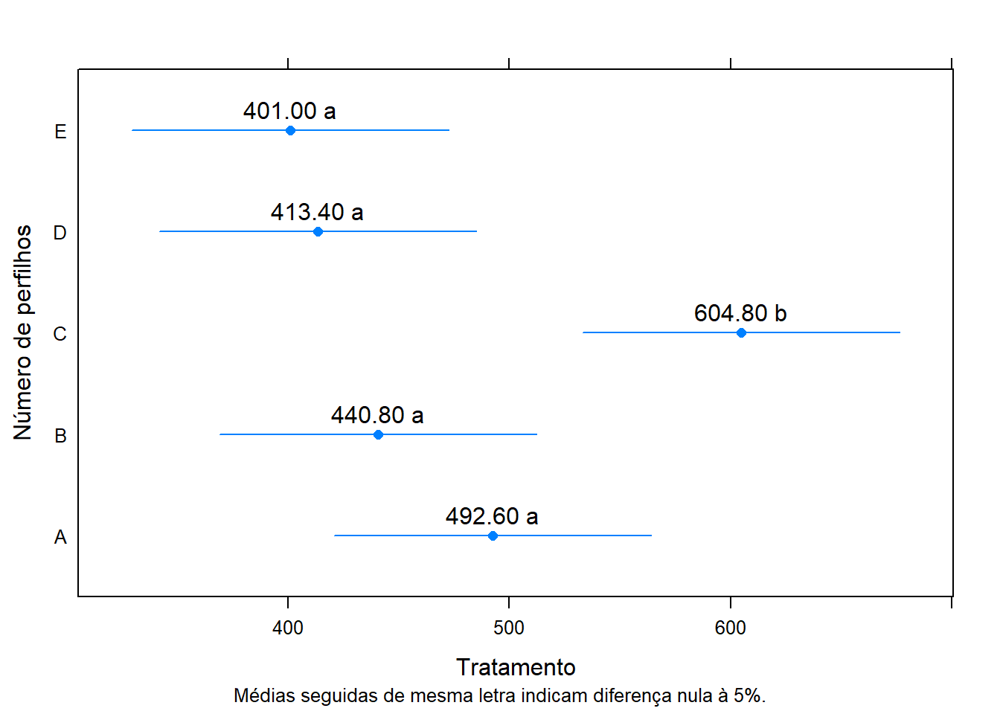
8.3.2 Exercicios
## linha coluna trat perf
## 1 1 1 1 155
## 2 2 1 5 198
## 3 3 1 4 187
## 4 4 1 2 204
## 5 5 1 6 209
## 6 6 1 3 216
## 7 1 2 5 191
## 8 2 2 3 199
## 9 3 2 2 213
## 10 4 2 6 225
## 11 5 2 4 218
## 12 6 2 1 181
## 13 1 3 6 203
## 14 2 3 4 205
## 15 3 3 3 195
## 16 4 3 1 135
## 17 5 3 5 196
## 18 6 3 2 178
## 19 1 4 3 187
## 20 2 4 1 186
## 21 3 4 6 177
## 22 4 4 4 190
## 23 5 4 2 209
## 24 6 4 5 215
## 25 1 5 2 162
## 26 2 5 6 181
## 27 3 5 5 188
## 28 4 5 3 204
## 29 5 5 1 175
## 30 6 5 4 203
## 31 1 6 4 167
## 32 2 6 2 174
## 33 3 6 1 161
## 34 4 6 5 181
## 35 5 6 3 210
## 36 6 6 6 206## 'data.frame': 36 obs. of 4 variables:
## $ linha : Factor w/ 6 levels "1","2","3","4",..: 1 2 3 4 5 6 1 2 3 4 ...
## $ coluna: Factor w/ 6 levels "1","2","3","4",..: 1 1 1 1 1 1 2 2 2 2 ...
## $ trat : Factor w/ 6 levels "1","2","3","4",..: 1 5 4 2 6 3 5 3 2 6 ...
## $ perf : num 155 198 187 204 209 216 191 199 213 225 ...Atribuir um nome menor ao conjunto de dados
Gráfico do layout
require(latticeExtra)
levelplot(perf~linha+coluna,
data=dados, aspect="iso")+
layer(with(dados,
panel.text(x=linha, y=coluna,
label=paste(trat, perf))))
Gráfico do layout
levelplot(perf~linha+coluna,
data=dados, aspect="iso")+
layer(with(dados,
panel.text(x=linha, y=coluna,
label=paste(trat, perf))))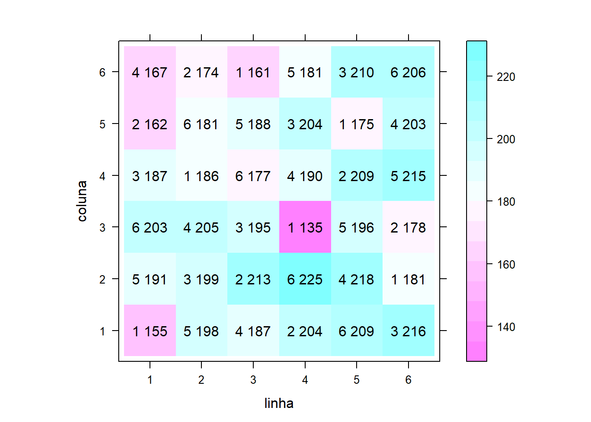
ANOVA
Foram atendidos?
Teste de Bartllet para homocedasticidade
##
## Bartlett test of homogeneity of variances
##
## data: m0$res and dados$trat
## Bartlett's K-squared = 6.5685, df = 5, p-value = 0.2548Teste de Shapiro-Wilk para Normalidade
##
## Shapiro-Wilk normality test
##
## data: m0$res
## W = 0.98701, p-value = 0.9408Quadro de análise de variância
## Analysis of Variance Table
##
## Response: perf
## Df Sum Sq Mean Sq F value Pr(>F)
## linha 5 2513.9 502.78 2.5039 0.06461 .
## coluna 5 1976.2 395.24 1.9684 0.12760
## trat 5 5298.2 1059.64 5.2773 0.00299 **
## Residuals 20 4015.9 200.79
## ---
## Signif. codes: 0 '***' 0.001 '**' 0.01 '*' 0.05 '.' 0.1 ' ' 1##
## Call:
## lm(formula = perf ~ linha + coluna + trat, data = dados)
##
## Residuals:
## Min 1Q Median 3Q Max
## -23.2222 -6.3889 -0.0556 5.9444 22.4444
##
## Coefficients:
## Estimate Std. Error t value Pr(>|t|)
## (Intercept) 155.3889 9.4468 16.449 4.34e-13 ***
## linha2 13.0000 8.1812 1.589 0.127741
## linha3 9.3333 8.1812 1.141 0.267417
## linha4 12.3333 8.1812 1.508 0.147310
## linha5 25.3333 8.1812 3.097 0.005689 **
## linha6 22.3333 8.1812 2.730 0.012905 *
## coluna2 9.6667 8.1812 1.182 0.251234
## coluna3 -9.5000 8.1812 -1.161 0.259231
## coluna4 -0.8333 8.1812 -0.102 0.919882
## coluna5 -9.3333 8.1812 -1.141 0.267417
## coluna6 -11.6667 8.1812 -1.426 0.169280
## trat2 24.5000 8.1812 2.995 0.007161 **
## trat3 36.3333 8.1812 4.441 0.000251 ***
## trat4 29.5000 8.1812 3.606 0.001764 **
## trat5 29.3333 8.1812 3.585 0.001850 **
## trat6 34.6667 8.1812 4.237 0.000404 ***
## ---
## Signif. codes: 0 '***' 0.001 '**' 0.01 '*' 0.05 '.' 0.1 ' ' 1
##
## Residual standard error: 14.17 on 20 degrees of freedom
## Multiple R-squared: 0.7091, Adjusted R-squared: 0.4909
## F-statistic: 3.25 on 15 and 20 DF, p-value: 0.007591Comparações múltiplas.
## List of 3
## $ coef:'data.frame': 6 obs. of 5 variables:
## ..$ estimate : num [1:6] 165 190 202 195 195 ...
## ..$ std.error: num [1:6] 5.78 5.78 5.78 5.78 5.78 ...
## ..$ statistic: num [1:6] 28.6 32.8 34.9 33.7 33.7 ...
## ..$ df : num [1:6] 20 20 20 20 20 20
## ..$ p.value : num [1:6] 1.06e-17 7.10e-19 2.16e-19 4.26e-19 4.33e-19 ...
## $ grid:'data.frame': 6 obs. of 1 variable:
## ..$ trat: chr [1:6] "1" "2" "3" "4" ...
## $ L : 'linest_matrix_class' num [1:6, 1:16] 1 1 1 1 1 ...
## ..- attr(*, "dimnames")=List of 2
## .. ..$ : NULL
## .. ..$ : chr [1:16] "(Intercept)" "linha2" "linha3" "linha4" ...
## ..- attr(*, "grid")='data.frame': 6 obs. of 1 variable:
## .. ..$ trat: chr [1:6] "1" "2" "3" "4" ...
## - attr(*, "class")= chr "linest_class"Criando a tabela com as estimativas
Comparações múltiplas, contrastes de Tukey. Método de correção de p-valor: single-step.
##
## Simultaneous Tests for General Linear Hypotheses
##
## Multiple Comparisons of Means: Tukey Contrasts
##
##
## Fit: lm(formula = perf ~ linha + coluna + trat, data = dados)
##
## Linear Hypotheses:
## Estimate Std. Error t value Pr(>|t|)
## 2 - 1 == 0 24.5000 8.1812 2.995 0.06738 .
## 3 - 1 == 0 36.3333 8.1812 4.441 0.00296 **
## 4 - 1 == 0 29.5000 8.1812 3.606 0.01874 *
## 5 - 1 == 0 29.3333 8.1812 3.585 0.01964 *
## 6 - 1 == 0 34.6667 8.1812 4.237 0.00465 **
## 3 - 2 == 0 11.8333 8.1812 1.446 0.69983
## 4 - 2 == 0 5.0000 8.1812 0.611 0.98895
## 5 - 2 == 0 4.8333 8.1812 0.591 0.99051
## 6 - 2 == 0 10.1667 8.1812 1.243 0.81101
## 4 - 3 == 0 -6.8333 8.1812 -0.835 0.95718
## 5 - 3 == 0 -7.0000 8.1812 -0.856 0.95272
## 6 - 3 == 0 -1.6667 8.1812 -0.204 0.99994
## 5 - 4 == 0 -0.1667 8.1812 -0.020 1.00000
## 6 - 4 == 0 5.1667 8.1812 0.632 0.98718
## 6 - 5 == 0 5.3333 8.1812 0.652 0.98524
## ---
## Signif. codes: 0 '***' 0.001 '**' 0.01 '*' 0.05 '.' 0.1 ' ' 1
## (Adjusted p values reported -- single-step method)Resumo compacto com letras.
## 1 2 3 4 5 6
## "a" "ab" "b" "b" "b" "b"Medias com intervalo de confiança
##
## Simultaneous Confidence Intervals
##
## Fit: lm(formula = perf ~ linha + coluna + trat, data = dados)
##
## Quantile = 2.8972
## 95% family-wise confidence level
##
##
## Linear Hypotheses:
## Estimate lwr upr
## 1 == 0 165.5000 148.7396 182.2604
## 2 == 0 190.0000 173.2396 206.7604
## 3 == 0 201.8333 185.0730 218.5937
## 4 == 0 195.0000 178.2396 211.7604
## 5 == 0 194.8333 178.0730 211.5937
## 6 == 0 200.1667 183.4063 216.9270Juntar com os nomes dos tratramentos com os intervalos
## List of 10
## $ y : num [1:36] 155 198 187 204 209 216 191 199 213 225 ...
## $ yname : chr "perf"
## $ x : Factor w/ 6 levels "1","2","3","4",..: 1 5 4 2 6 3 5 3 2 6 ...
## $ xname : chr "trat"
## $ weights : NULL
## $ lp : Named num [1:36] 155 198 194 192 215 ...
## ..- attr(*, "names")= chr [1:36] "1" "2" "3" "4" ...
## $ covar : logi TRUE
## $ comps : chr [1:15, 1:2] "2" "3" "4" "5" ...
## ..- attr(*, "dimnames")=List of 2
## .. ..$ : chr [1:15] "2 - 1" "3 - 1" "4 - 1" "5 - 1" ...
## .. ..$ : NULL
## $ signif : logi [1:15] FALSE TRUE TRUE TRUE TRUE FALSE ...
## $ mcletters:List of 5
## ..$ Letters : Named chr [1:6] "a" "ab" "b" "b" ...
## .. ..- attr(*, "names")= chr [1:6] "1" "2" "3" "4" ...
## ..$ monospacedLetters: Named chr [1:6] "a " "ab" " b" " b" ...
## .. ..- attr(*, "names")= chr [1:6] "1" "2" "3" "4" ...
## ..$ LetterMatrix : logi [1:6, 1:2] TRUE TRUE FALSE FALSE FALSE FALSE ...
## .. ..- attr(*, "dimnames")=List of 2
## .. .. ..$ : chr [1:6] "1" "2" "3" "4" ...
## .. .. ..$ : chr [1:2] "a" "b"
## ..$ aLetters : chr [1:52] "a" "b" "c" "d" ...
## ..$ aseparator : chr "."
## ..- attr(*, "class")= chr "multcompLetters"
## - attr(*, "class")= chr "cld"Representação gráfica dos resultados.
require(latticeExtra)
segplot(trat~lwr+upr,
centers=Estimate,
data=ci,
draw=F,
xlab = expression(" "), ylab = " ",
sub = list("Médias seguidas de mesma letra indicam diferença nula à 5%.",
font=1, cex=0.8)) +
layer(panel.text( x = centers,
y = z,
labels = sprintf("%0.2f %s", centers, ci$cld),
pos = 3))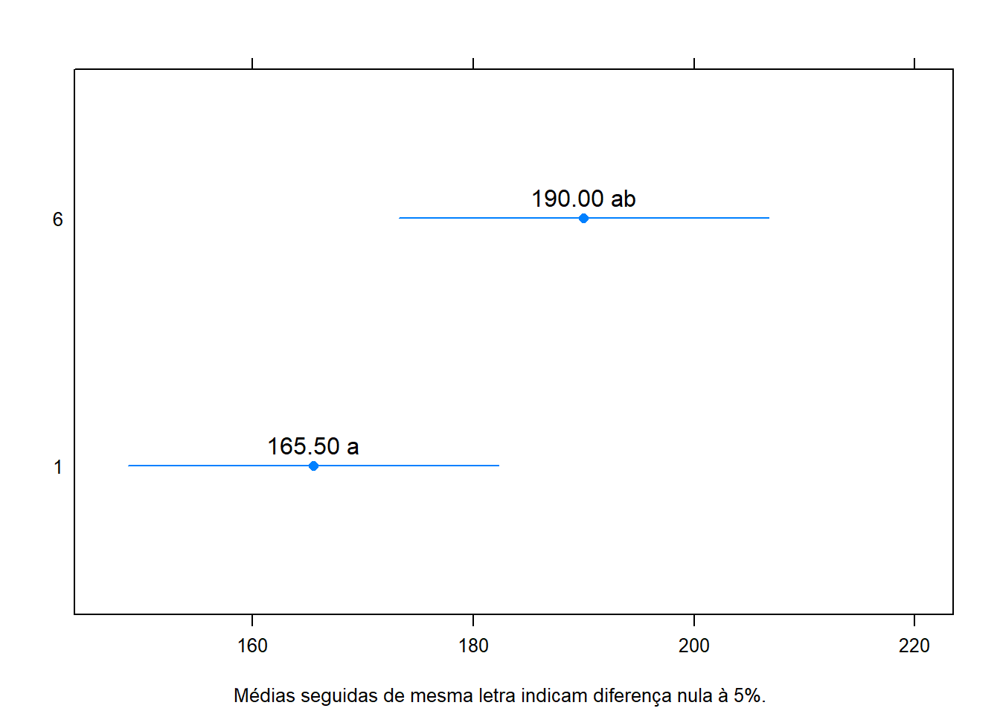
8.3.3 Exercicio para entregar
DiasEg9.4 help(“DiasEg9.4”)
BarbinPg104 help(“BarbinPg104”)
ZimmermannTb12.27 help(ZimmermannTb12.27)
ZimmermannTb12.26 help(ZimmermannTb12.26)
StorckEg2.3.5 help(StorckEg2.3.5)
ZimmermannTb16.10 help(ZimmermannTb16.10)
8.4 Regressão Linear simples
Iremos utilizar o pacote tidyverse
## -- Attaching packages ----------------------- tidyverse 1.3.0 --## v tibble 3.0.0 v purrr 0.3.3
## v tidyr 1.0.2 v stringr 1.4.0
## v readr 1.3.1 v forcats 0.5.0## -- Conflicts -------------------------- tidyverse_conflicts() --
## x dplyr::arrange() masks plyr::arrange()
## x purrr::compact() masks plyr::compact()
## x dplyr::count() masks plyr::count()
## x tidyr::expand() masks reshape::expand()
## x dplyr::failwith() masks plyr::failwith()
## x dplyr::filter() masks stats::filter()
## x dplyr::id() masks plyr::id()
## x dplyr::lag() masks stats::lag()
## x latticeExtra::layer() masks ggplot2::layer()
## x dplyr::mutate() masks plyr::mutate()
## x reshape::rename() masks dplyr::rename(), plyr::rename()
## x dplyr::select() masks MASS::select()
## x dplyr::summarise() masks plyr::summarise()
## x dplyr::summarize() masks plyr::summarize()Regressão linear é uma equação para se estimar a condicional (valor esperado) de uma variável y, dados os valores de algumas outras variáveis x.
y= a+bx
Vamos utilizar o exemplo do banco de dados do R

##
## Pearson's product-moment correlation
##
## data: Orange$age and Orange$circumference
## t = 12.9, df = 33, p-value = 1.931e-14
## alternative hypothesis: true correlation is not equal to 0
## 95 percent confidence interval:
## 0.8342364 0.9557955
## sample estimates:
## cor
## 0.9135189Zerando o intercepto
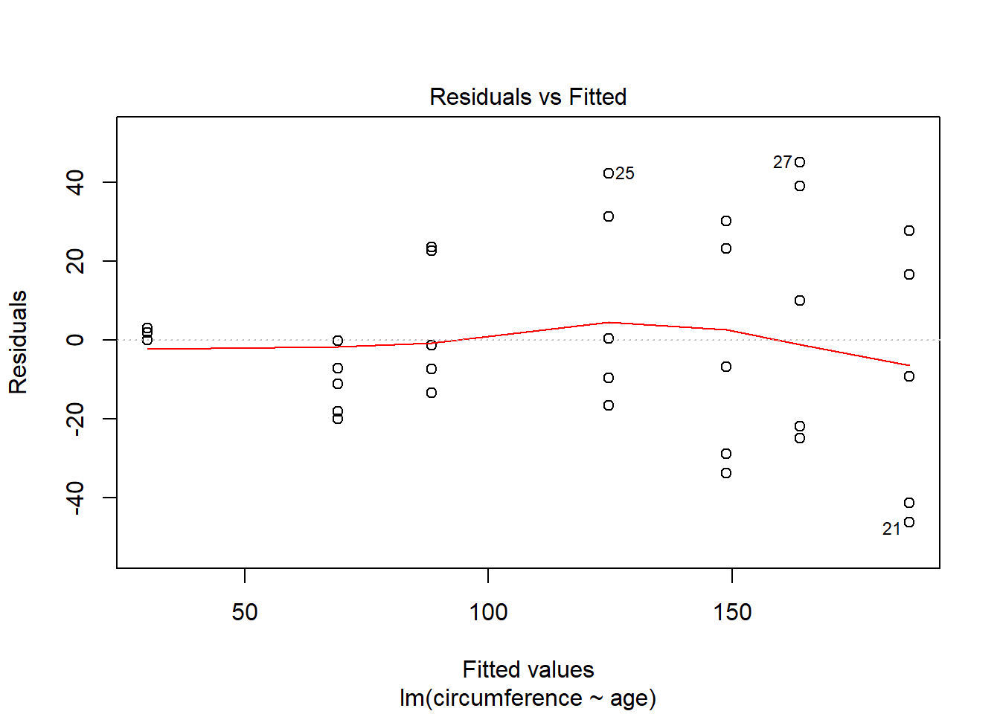


##
## Shapiro-Wilk normality test
##
## data: residuals(rl)
## W = 0.97289, p-value = 0.5273##
## Bartlett test of homogeneity of variances
##
## data: rl$res and Orange$Tree
## Bartlett's K-squared = 2.7663, df = 4, p-value = 0.5977Resultado da Regressãolinear
##
## Call:
## lm(formula = circumference ~ age, data = Orange)
##
## Residuals:
## Min 1Q Median 3Q Max
## -46.310 -14.946 -0.076 19.697 45.111
##
## Coefficients:
## Estimate Std. Error t value Pr(>|t|)
## (Intercept) 17.399650 8.622660 2.018 0.0518 .
## age 0.106770 0.008277 12.900 1.93e-14 ***
## ---
## Signif. codes: 0 '***' 0.001 '**' 0.01 '*' 0.05 '.' 0.1 ' ' 1
##
## Residual standard error: 23.74 on 33 degrees of freedom
## Multiple R-squared: 0.8345, Adjusted R-squared: 0.8295
## F-statistic: 166.4 on 1 and 33 DF, p-value: 1.931e-14Rejeição da hipótese nula (variáveis não são relacionadas) valor p <0.005 R-square explica o quanto o modelo explica da variação
Gráfico
ggplot(Orange,aes(x=age,y=circumference))+ geom_point(colour="steelblue",size=4)+
geom_smooth(method="lm",colour="black")+labs(title="Regressão linear de Orange")+
theme_minimal() ## `geom_smooth()` using formula 'y ~ x'
Gerar graficos com o pacote ggpmisc
Gráfico
formula <- y ~ poly(x, 2, raw = TRUE)
ggplot(Orange, aes(x=age, y=circumference)) +
geom_point() +
geom_smooth(method = "lm", formula = formula) +
stat_poly_eq(aes(label = paste(..eq.label.., ..adj.rr.label.., sep = "~~~~")),
formula = formula, parse = TRUE)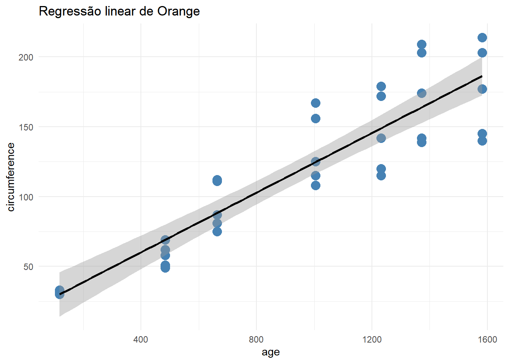
Outras funções interessantes
## (Intercept) age
## 17.3996502 0.1067703## 2.5 % 97.5 %
## (Intercept) -0.14328303 34.9425835
## age 0.08993141 0.1236092## 1 2 3 4 5 6 7 8
## 29.99855 69.07649 88.29515 124.59706 148.83392 163.88854 186.31030 29.99855
## 9 10 11 12 13 14 15 16
## 69.07649 88.29515 124.59706 148.83392 163.88854 186.31030 29.99855 69.07649
## 17 18 19 20 21 22 23 24
## 88.29515 124.59706 148.83392 163.88854 186.31030 29.99855 69.07649 88.29515
## 25 26 27 28 29 30 31 32
## 124.59706 148.83392 163.88854 186.31030 29.99855 69.07649 88.29515 124.59706
## 33 34 35
## 148.83392 163.88854 186.31030## 1 2 3 4 5
## 0.001451402 -11.076487573 -1.295146086 -9.597056609 -28.833920400
## 6 7 8 9 10
## -21.888536235 -41.310304499 3.001451402 -0.076487573 22.704853914
## 11 12 13 14 15
## 31.402943391 23.166079600 39.111463765 16.689695501 0.001451402
## 16 17 18 19 20
## -18.076487573 -13.295146086 -16.597056609 -33.833920400 -24.888536235
## 21 22 23 24 25
## -46.310304499 2.001451402 -7.076487573 23.704853914 42.402943391
## 26 27 28 29 30
## 30.166079600 45.111463765 27.689695501 0.001451402 -20.076487573
## 31 32 33 34 35
## -7.295146086 0.402943391 -6.833920400 10.111463765 -9.310304499## Analysis of Variance Table
##
## Response: circumference
## Df Sum Sq Mean Sq F value Pr(>F)
## age 1 93772 93772 166.42 1.931e-14 ***
## Residuals 33 18595 563
## ---
## Signif. codes: 0 '***' 0.001 '**' 0.01 '*' 0.05 '.' 0.1 ' ' 1Qualquer modelo de Regressão polinomial pode ser obtido com um comando
simples: o lm() que vem do inglês “linear models”.
Veja o exemplo abaixo:

Observe a necessidade do argumento I() para interações como x^2.
##
## Call:
## lm(formula = prod ~ fert + I(fert^2))
##
## Coefficients:
## (Intercept) fert I(fert^2)
## 15.51667 2.95720 -0.02716Para “desenhar” a curva ajustada…
Várias outras análises podem ser feitas como anteriormente na Regressão linear. Veja uma delas:
## Analysis of Variance Table
##
## Response: prod
## Df Sum Sq Mean Sq F value Pr(>F)
## fert 1 7.6 7.6 0.5878 0.4683
## I(fert^2) 1 3894.6 3894.6 302.2072 5.126e-07 ***
## Residuals 7 90.2 12.9
## ---
## Signif. codes: 0 '***' 0.001 '**' 0.01 '*' 0.05 '.' 0.1 ' ' 1 formula <- y ~ poly(x, 2, raw = TRUE)
ggplot(dados, aes(x=fert, y=prod)) +
geom_point() +
geom_smooth(method = "lm", formula = formula) +
stat_poly_eq(aes(label = paste(..eq.label.., ..adj.rr.label..,
sep = "~~italic(\"with\")~~")),
formula = formula, parse = TRUE)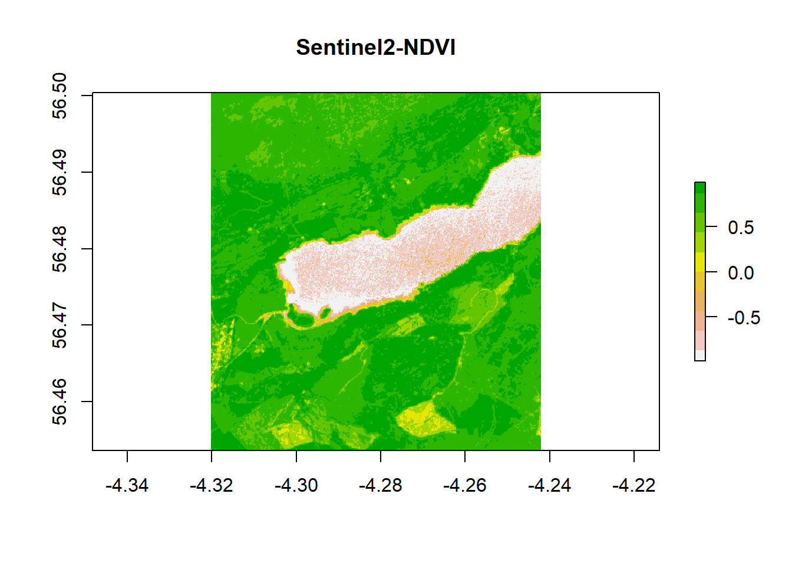
8.5 Regressão Linear Multipla
Os modelos múltiplos são aqueles em que duas ou mais variáveis independentes influenciam na variação da variavel dependente. Eles podem ser de grau 1,2 ou maior. O exemplo a seguir aborda uma Regressão polinomial multipla de 2º grau, com duas variáveis independentes.
y= a+ bx + b1x1 + b2x2 + b3x3…
Exemplo:
## Loading required package: carData##
## Attaching package: 'car'## The following object is masked from 'package:purrr':
##
## some## The following object is masked from 'package:dplyr':
##
## recode## Sepal.Length Sepal.Width Petal.Length Petal.Width Species
## 1 5.1 3.5 1.4 0.2 setosa
## 2 4.9 3.0 1.4 0.2 setosa
## 3 4.7 3.2 1.3 0.2 setosa
## 4 4.6 3.1 1.5 0.2 setosa
## 5 5.0 3.6 1.4 0.2 setosa
## 6 5.4 3.9 1.7 0.4 setosaVIF - variation inflation factor / fator de inflação da vari?ncia
## Sepal.Width Petal.Length
## 1.224831 1.224831##
## Call:
## lm(formula = Sepal.Length ~ Sepal.Width + Petal.Length, data = iris)
##
## Residuals:
## Min 1Q Median 3Q Max
## -0.96159 -0.23489 0.00077 0.21453 0.78557
##
## Coefficients:
## Estimate Std. Error t value Pr(>|t|)
## (Intercept) 2.24914 0.24797 9.07 7.04e-16 ***
## Sepal.Width 0.59552 0.06933 8.59 1.16e-14 ***
## Petal.Length 0.47192 0.01712 27.57 < 2e-16 ***
## ---
## Signif. codes: 0 '***' 0.001 '**' 0.01 '*' 0.05 '.' 0.1 ' ' 1
##
## Residual standard error: 0.3333 on 147 degrees of freedom
## Multiple R-squared: 0.8402, Adjusted R-squared: 0.838
## F-statistic: 386.4 on 2 and 147 DF, p-value: < 2.2e-16fit2 <- lm (Sepal.Length ~ Sepal.Width + Petal.Length + Petal.Width, data=iris)
vif(fit2) #problemático, valores>10## Sepal.Width Petal.Length Petal.Width
## 1.270815 15.097572 14.234335##
## Call:
## lm(formula = Sepal.Length ~ Sepal.Width + Petal.Length + Petal.Width,
## data = iris)
##
## Residuals:
## Min 1Q Median 3Q Max
## -0.82816 -0.21989 0.01875 0.19709 0.84570
##
## Coefficients:
## Estimate Std. Error t value Pr(>|t|)
## (Intercept) 1.85600 0.25078 7.401 9.85e-12 ***
## Sepal.Width 0.65084 0.06665 9.765 < 2e-16 ***
## Petal.Length 0.70913 0.05672 12.502 < 2e-16 ***
## Petal.Width -0.55648 0.12755 -4.363 2.41e-05 ***
## ---
## Signif. codes: 0 '***' 0.001 '**' 0.01 '*' 0.05 '.' 0.1 ' ' 1
##
## Residual standard error: 0.3145 on 146 degrees of freedom
## Multiple R-squared: 0.8586, Adjusted R-squared: 0.8557
## F-statistic: 295.5 on 3 and 146 DF, p-value: < 2.2e-16fit3<-lm(Sepal.Length ~ Sepal.Width * Petal.Length, data=iris)
vif(fit3)# muito problemático, valores muito altos## Sepal.Width Petal.Length Sepal.Width:Petal.Length
## 6.457248 81.811109 69.223186##
## Call:
## lm(formula = Sepal.Length ~ Sepal.Width * Petal.Length, data = iris)
##
## Residuals:
## Min 1Q Median 3Q Max
## -0.99594 -0.21165 -0.01652 0.21244 0.77249
##
## Coefficients:
## Estimate Std. Error t value Pr(>|t|)
## (Intercept) 1.40438 0.53253 2.637 0.00926 **
## Sepal.Width 0.84996 0.15800 5.379 2.91e-07 ***
## Petal.Length 0.71846 0.13886 5.174 7.45e-07 ***
## Sepal.Width:Petal.Length -0.07701 0.04305 -1.789 0.07571 .
## ---
## Signif. codes: 0 '***' 0.001 '**' 0.01 '*' 0.05 '.' 0.1 ' ' 1
##
## Residual standard error: 0.3308 on 146 degrees of freedom
## Multiple R-squared: 0.8436, Adjusted R-squared: 0.8404
## F-statistic: 262.5 on 3 and 146 DF, p-value: < 2.2e-16Outras funções interessantes
## (Intercept) Sepal.Width Petal.Length
## 2.2491402 0.5955247 0.4719200## 2.5 % 97.5 %
## (Intercept) 1.7590943 2.7391860
## Sepal.Width 0.4585161 0.7325334
## Petal.Length 0.4380915 0.5057486## 1 2 3 4 5 6 7 8
## 4.994165 4.696402 4.768315 4.803147 5.053717 5.373951 4.934612 4.981804
## 9 10 11 12 13 14 15 16
## 4.636850 4.803147 5.160462 5.028996 4.696402 4.554826 5.197543 5.577329
## 17 18 19 20 21 22 23 24
## 5.185183 4.994165 5.314398 5.220014 5.076188 5.160462 4.864949 5.016636
## 25 26 27 28 29 30 31 32
## 5.170572 4.790786 5.028996 5.041357 4.934612 4.909891 4.850339 4.981804
## 33 34 35 36 37 38 39 40
## 5.398672 5.411032 4.803147 4.721123 4.946973 5.053717 4.649210 4.981804
## 41 42 43 44 45 46 47 48
## 4.946973 4.232343 4.768315 5.088549 5.408782 4.696402 5.267206 4.815507
## 49 50 51 52 53 54 55 56
## 5.160462 4.875060 6.372844 6.278460 6.407675 5.506527 6.087442 6.040250
## 57 58 59 60 61 62 63 64
## 6.432396 5.235736 6.146994 5.697545 5.091910 6.017779 5.446975 6.194186
## 65 66 67 68 69 70 71 72
## 5.675074 6.171715 6.159355 5.791929 5.682935 5.578440 6.420036 5.804290
## 73 74 75 76 77 78 79 80
## 6.050360 6.134634 6.005418 6.112163 6.181826 6.395315 6.099802 5.449225
## 81 82 83 84 85 86 87 88
## 5.471696 5.424504 5.697545 6.263849 6.159355 6.397564 6.313291 5.695295
## 89 90 91 92 93 94 95 96
## 5.970587 5.625632 5.873953 6.206547 5.685185 5.176183 5.839121 6.017779
## 97 98 99 100 101 102 103 104
## 5.958226 6.005418 5.153712 5.851482 7.045892 6.263849 6.820043 6.618914
## 105 106 107 108 109 110 111 112
## 6.772851 7.150387 5.861592 6.949258 6.475088 7.271741 6.561612 6.358233
## 113 114 115 116 117 118 119 120
## 6.631275 6.097552 6.323402 6.655996 6.631275 7.673998 7.053753 5.918895
## 121 122 123 124 125 126 127 128
## 6.844764 6.229018 7.078474 6.169465 6.904316 6.986340 6.181826 6.348123
## 129 130 131 132 133 134 135 136
## 6.559362 6.772851 6.795322 7.532422 6.559362 6.323402 6.440257 6.914427
## 137 138 139 140 141 142 143 144
## 6.916677 6.690827 6.300931 6.643635 6.738019 6.502059 6.263849 6.939148
## 145 146 147 148 149 150
## 6.904316 6.489699 6.097552 6.489699 6.822293 6.442507## 1 2 3 4 5 6
## 0.105835164 0.203597538 -0.068315407 -0.203146940 -0.053717311 0.026049253
## 7 8 9 10 11 12
## -0.334612361 0.018195635 -0.236849987 0.096853060 0.239538210 -0.228996369
## 13 14 15 16 17 18
## 0.103597538 -0.254826450 0.602456797 0.122670886 0.214817268 0.105835164
## 19 20 21 22 23 24
## 0.385601728 -0.120014265 0.323811627 -0.060461790 -0.264949295 0.083364102
## 25 26 27 28 29 30
## -0.370572381 0.209213530 -0.028996369 0.158643160 0.265387639 -0.209891419
## 31 32 33 34 35 36
## -0.050338944 0.418195635 -0.198671689 0.088967840 0.096853060 0.278876596
## 37 38 39 40 41 42
## 0.553027168 -0.153717311 -0.249210458 0.118195635 0.053027168 0.267656866
## 43 44 45 46 47 48
## -0.368315407 -0.088548844 -0.308782280 0.103597538 -0.167206269 -0.215507411
## 49 50 51 52 53 54
## 0.139538210 0.124940114 0.627156459 0.121540467 0.492324926 -0.006527240
## 55 56 57 58 59 60
## 0.412558362 -0.340249634 -0.132396016 -0.335735687 0.453005887 -0.497545135
## 61 62 63 64 65 66
## -0.091909796 -0.117778572 0.553025235 -0.094186117 -0.075074073 0.528284945
## 67 68 69 70 71 72
## -0.559354584 0.008070857 0.517065215 0.021559814 -0.520035545 0.295710386
## 73 74 75 76 77 78
## 0.249639775 -0.034633642 0.394581899 0.487837420 0.618174354 0.304685397
## 79 80 81 82 83 84
## -0.099802109 0.250775355 0.028304293 0.075496297 0.102454865 -0.263849183
## 85 86 87 88 89 90
## -0.759354584 -0.397564483 0.386708934 0.604704744 -0.370586568 -0.125632190
## 91 92 93 94 95 96
## -0.373952680 -0.106546588 0.114815336 -0.176183212 -0.239121147 -0.317778572
## 97 98 99 100 101 102
## -0.258226097 0.194581899 -0.053712150 -0.151481618 -0.745892067 -0.463849183
## 103 104 105 106 107 108
## 0.279957361 -0.318914152 -0.272850635 0.449613334 -0.961592209 0.350741820
## 109 110 111 112 113 114
## 0.224911740 -0.071741496 -0.061611557 0.041766810 0.168725377 -0.397552229
## 115 116 117 118 119 120
## -0.523401657 -0.255995565 -0.131274623 0.026001531 0.646247222 0.081105196
## 121 122 123 124 125 126
## 0.055236419 -0.629017650 0.621526280 0.130534825 -0.204316055 0.213660408
## 127 128 129 130 131 132
## 0.018174354 -0.248122599 -0.159361677 0.427149365 0.604678303 0.367577543
## 133 134 135 136 137 138
## -0.159361677 -0.023401657 -0.340256727 0.785573353 -0.616676526 -0.290827098
## 139 140 141 142 143 144
## -0.300930595 0.256364906 -0.038019102 0.397940918 -0.463849183 -0.139147588
## 145 146 147 148 149 150
## -0.204316055 0.210301389 0.202447771 0.010301389 -0.622292518 -0.542506607## Analysis of Variance Table
##
## Response: Sepal.Length
## Df Sum Sq Mean Sq F value Pr(>F)
## Sepal.Width 1 1.412 1.412 12.714 0.0004902 ***
## Petal.Length 1 84.427 84.427 760.059 < 2.2e-16 ***
## Residuals 147 16.329 0.111
## ---
## Signif. codes: 0 '***' 0.001 '**' 0.01 '*' 0.05 '.' 0.1 ' ' 1## (Intercept) Sepal.Width Petal.Length
## (Intercept) 0.061488936 -0.0166054883 -0.0026556385
## Sepal.Width -0.016605488 0.0048063941 0.0005084458
## Petal.Length -0.002655638 0.0005084458 0.00029301498.5.1 Referência
MELO, M. P.; PETERNELI, L. A. Conhecendo o R: Um visão mais que estatística. Viçosa, MG: UFV, 2013. 222p. Cap. 1.
ZEVIANI, W. M. Estatástica Básica e Experimentação no R. 45p.
http://www.leg.ufpr.br/~paulojus/
https://docs.r4photobiology.info/ggpmisc/articles/user-guide-1.html